1 장 선형회귀모형
선형회귀모형은 통계분석 분야에서 가장 중요한 역할을 담당하고 있는 분석 도구 중 하나로서 양적 반응변수의 예측에 유용하게 사용되고 있다. 신빙성 있는 예측이 이루어지기 위해서는 우선 최적의 설명변수들을 선택하여 모형을 적합해야 하며, 모형에 대한 진단 과정 등을 통해 가정 만족 여부를 확인해야 한다. 이런 과정을 거쳐서 선정된 회귀모형만이 예측의 신빙성을 통계적으로 보장받을 수 있는 모형이 된다.
1.1 회귀모형 적합
반응변수는 우리가 파악하고 예측하고자 하는 특정 현상을 나타내는 변수를 의미하며, 일반적으로 \(Y\) 로 표시한다. 또한 설명변수는 반응변수가 나타내는 특정 현상에 연관되어 있을 것으로 판단되는 변수를 의미하며, 일반적으로 \(X_{1}, X_{2}, \ldots, X_{k}\) 로 표시한다. 이러한 반응변수와 설명변수들 사이의 확률적 관계를 다음과 같이 하나의 함수 형태로 나타내려는 시도를 회귀분석이라고 할 수 있다.
\[ Y = f(X) + \varepsilon \] 함수 \(f\) 에 하나의 설명변수만이 포함되면 단순회귀모형, 여러 개의 설명변수가 포함되면 다중회귀모형이라고 한다.
1.1.1 단순선형회귀모형
단순선형회귀모형에서는 반응변수 \(Y\) 와 설명변수 \(X\) 사이에 다음의 관계가 존재한다고 가정한다.
\[\begin{equation} Y = \beta_{0} + \beta_{1}X + \varepsilon \tag{1.1} \end{equation}\]회귀계수 \(\beta_{0}\) 와 \(\beta_{1}\) 은 ‘모집단 회귀직선’ 을 정의하고 있는 모수이며, 두 모수의 관계가 ’선형’이기 때문에 식 (1.1)을 선형회귀모형이라고 한다.
오차항 \(\varepsilon\) 은 반응변수의 변동 중 설명변수로 설명이 되지 않은 부분을 나타내는 확률변수이다. 설정된 회귀모형이 두 변수의 관계를 적절하게 설명하고 있다면, 오차항에는 랜덤 요소만이 남게 된다. 일반적으로 오차항 \(\varepsilon\) 은 \(N(0, \sigma^{2})\) 분포를 따른다고 가정한다.
\(\bullet\) 회귀계수의 추정
식 (1.1)을 이용해서 \(Y\) 의 변동을 설명하고 예측하려면, 값이 알려져 있지 않는 모수 \(\beta_{0}\) 와 \(\beta_{1}\) 을 추정해야 한다. 두 변수 \(X\) 와 \(Y\) 에 대해 관측된 \(n\) 개의 자료를 \((x_{1},y_{1})\), \((x_{2}, y_{2})\), \(\ldots\), \((x_{n}, y_{n})\) 이라고 하자. 두 모수 \(\beta_{0}\) 와 \(\beta_{1}\) 의 추정은 \(n\) 개의 자료를 가장 잘 설명할 수 있는 직선을 구하는 과정이라고 할 수 있는데, ’자료를 가장 잘 설명하는 직선’이란 자료와 직선 사이에 간격이 가장 작은 직선을 의미한다.
두 모수의 추정값을 \(\hat{\beta}_{0}\) 과 \(\hat{\beta}_{1}\) 라 하면, \(X\) 변수의 \(i\) 번째 관찰값에 대한 \(Y\) 변수의 \(i\) 번째 예측값은 \(\hat{y}_{i} = \hat{\beta}_{0} + \hat{\beta}_{1}x_{i}\) 가 되며, \(Y\) 변수의 관찰값과 예측값의 차이인 잔차 \(e_{i}=y_{i}-\hat{y}_{i}\) 가 자료와 직선 사이의 간격이 된다. 따라서 \(\hat{\beta}_{0}\) 과 \(\hat{\beta}_{1}\) 은 잔차의 제곱합(Residual sum of squares; RSS)을 최소화시키도록 구해야 한다.
\[\begin{equation} RSS = \sum_{i=1}^{n} \left( y_{i}-\hat{\beta}_{0}-\hat{\beta}_{1}x_{i} \right)^{2} \tag{1.2} \end{equation}\]식 (1.2)를 최소화시키는 \(\hat{\beta}_{0}\) 과 \(\hat{\beta}_{1}\) 은 다음과 같이 유도된다.
\[\begin{align*} \hat{\beta}_{1} &= \frac{\sum_{i=1}^{n}(x_{i}-\overline{x})(y_{i}-\overline{y})}{\sum_{i=1}^{n}(x_{i}-\overline{x})^{2}} \\ \hat{\beta}_{0} &= \overline{y}-\hat{\beta}_{1}\overline{x} \end{align*}\]1.1.2 다중선형회귀모형
반응변수의 변동을 하나의 설명변수만으로 충분하게 설명하는 것은 대부분의 경우 불가능할 것이다. 따라서 반응변수와 관련이 있을 것으로 보이는 여러 개의 설명변수를 모형에 포함시키는 다중회귀모형이 실제 상황에서 많이 사용되는 모형이 된다. 기본 가정 및 추론 방법에서는 단순회귀모형과 큰 차이가 있는 것은 아니지만, 모형에 여러 개의 설명변수가 포함되기 때문에 단순회귀모형에서는 없었던 문제들이 발생할 수 있다.
다중선형회귀모형에서는 반응변수 \(Y\) 와 설명변수 \(X_{1}, \ldots, X_{k}\) 사이에 다음의 관계가 존재한다고 가정한다.
\[\begin{equation} Y = \beta_{0} + \beta_{1}X_{1} + \cdots + \beta_{k}X_{k} + \varepsilon \tag{1.3} \end{equation}\]모수 \(\beta_{0}, \beta_{1}, \ldots, \beta_{k}\) 는 \((k+1)\) 차원의 공간에서 정의되는 회귀평면을 구성하고 있으며, 오차항 \(\varepsilon\) 은 단순회귀모형에서와 동일한 의미를 갖고 있는 확률변수이다.
\(\bullet\) 회귀계수의 추정
반응변수 \(Y\) 와 설명변수 \(X_{1}, \ldots, X_{k}\) 에 대해 관측된 \(n\) 개의 자료는 식 (1.3)에 의해 다음과 같은 관계가 있다.
\[\begin{align*} y_{1} &= \beta_{0} + \beta_{1}x_{11} + \cdots + \beta_{k}x_{k1} + \varepsilon_{1} \\ y_{2} &= \beta_{0} + \beta_{1}x_{12} + \cdots + \beta_{k}x_{k2} + \varepsilon_{2} \\ \vdots \\ y_{n} &= \beta_{0} + \beta_{1}x_{1n} + \cdots + \beta_{k}x_{kn} + \varepsilon_{n} \end{align*}\]관측된 자료의 관계를 다음과 같이 행렬 형태로 정리할 수 있다.
\[ \begin{pmatrix} y_{1} \\ y_{2} \\ \vdots \\ y_{n} \end{pmatrix} = \begin{pmatrix} 1 & x_{11} & \cdots & x_{k1} \\ 1 & x_{21} & \cdots & x_{k2} \\ \vdots & \vdots & \ddots & \vdots \\ 1 & x_{1n} & \cdots & x_{kn} \end{pmatrix} \begin{pmatrix} \beta_{0} \\ \beta_{1} \\ \vdots \\ \beta_{k} \end{pmatrix} + \begin{pmatrix} \varepsilon_{1} \\ \varepsilon_{2} \\ \vdots \\ \varepsilon_{n} \end{pmatrix} \]
또는 다음의 행렬로 표현할 수 있다.
\[\begin{equation} \mathbf{Y} = \mathbf{X}\boldsymbol{\beta} + \boldsymbol{\varepsilon} \end{equation}\]\(\mathbf{Y}\) 는 반응변수의 관찰값 벡터이고, \(\mathbf{X}\) 는 설명변수의 관찰값 행렬로써 design matrix라고 하며, \(\boldsymbol{\beta}\) 는 모수 벡터, \(\boldsymbol{\varepsilon}\) 은 오차항 벡터이다.
회귀계수 \(\beta_{0}, \beta_{1}, \ldots, \beta_{k}\) 의 추정은 단순회귀모형의 경우와 동일한 방식으로 이루어진다. 즉, 다음의 RSS를 최소화하는 \(\hat{\boldsymbol{\beta}} = (\hat{\beta}_{0}, \hat{\beta}_{1}, \ldots, \hat{\beta}_{k})\) 를 선택한다.
\[\begin{equation} RSS = \sum_{i=1}^{n} \left(y_{i} - \hat{\beta}_{0} - \hat{\beta}_{1}x_{1i} - \ldots - \hat{\beta}_{k}x_{ki} \right)^{2} \tag{1.4} \end{equation}\]식 (1.4)를 최소화시키는 \(\hat{\boldsymbol{\beta}}\) 은 최소추정량이라고 불리며, 다음과 같이 주어진다.
\[\begin{equation} \hat{\boldsymbol{\beta}} = \left( \mathbf{X}^{T} \mathbf{X} \right)^{-1} \mathbf{X}^{T} \mathbf{Y} \tag{1.5} \end{equation}\]식 (1.5)에 정의된 최소제곱추정량은 오차항 \(\varepsilon_{1}, \ldots, \varepsilon_{n}\) 이 서로 독립이고 모두 \(N(0, \sigma^{2})\) 의 분포를 한다는 가정을 한다면 다음의 분포를 따른다.
\[\begin{equation} \hat{\boldsymbol{\beta}} \sim N \left( \boldsymbol{\beta}, \left( \mathbf{X}^{T} \mathbf{X} \right)^{-1} \sigma^{2} \right) \end{equation}\]최소제곱추정량을 사용한 회귀모형에 대한 추론의 정당성은 Gauss-Markov 정리에서 보장되는데, Gauss-Markov 정리란 오차항 \(\varepsilon_{1}, \ldots, \varepsilon_{n}\) 이 서로 독립이고 평균이 \(0\) , 분산이 \(\sigma^{2}\) 이면, 최소제곱추정량 \(\hat{\boldsymbol{\beta}}\) 은 최량선형불편추정량(Best Linear Unbiased Estimator)이 된다는 것이다. 여기에서 ’Best’의 의미는 모든 형태의 선형불편추정량 중에서 최소제곱추정량의 분산이 가장 작다는 것이다. 따라서 오차항의 가정이 심하게 위반이 된다면 최소제곱추정량에 의한 추론 결과에 대한 신뢰도가 떨어지게 된다.
\(\bullet\) 예제: 행렬 state.x77
행렬 state.x77은 미국 50개 주와 관련된 8개 변수로 구성되었다. 변수 Life Exp와 HS Grad는 이름 중간에 빈칸이 있으며, 각 주의 이름이 행렬의 row name으로 입력되어 있음을 알 수 있다.
> state.x77[1:5,]
Population Income Illiteracy Life Exp Murder HS Grad Frost Area
Alabama 3615 3624 2.1 69.05 15.1 41.3 20 50708
Alaska 365 6315 1.5 69.31 11.3 66.7 152 566432
Arizona 2212 4530 1.8 70.55 7.8 58.1 15 113417
Arkansas 2110 3378 1.9 70.66 10.1 39.9 65 51945
California 21198 5114 1.1 71.71 10.3 62.6 20 156361변수 Murder를 반응변수로, 나머지 7개 변수를 설명변수로 하는 다중회귀모형을 설정해 보자. 회귀분석을 원활하게 수행하기 위해서는 자료가 행렬이 아닌 데이터 프레임의 형태로 입력되어 있어야 한다. 행렬 state.x77을 데이터 프레임으로 변환하면서, 빈칸이 있는 변수 이름을 수정하고 반응변수를 마지막 변수로 이동시키자.
> library(tidyverse)
> states <- as_tibble(state.x77) %>%
+ rename(Life_Exp = `Life Exp`, HS_Grad = `HS Grad`) %>%
+ relocate(Murder, .after = last_col()) %>%
+ print(n = 3)
# A tibble: 50 × 8
Population Income Illiteracy Life_Exp HS_Grad Frost Area Murder
<dbl> <dbl> <dbl> <dbl> <dbl> <dbl> <dbl> <dbl>
1 3615 3624 2.1 69.0 41.3 20 50708 15.1
2 365 6315 1.5 69.3 66.7 152 566432 11.3
3 2212 4530 1.8 70.6 58.1 15 113417 7.8
# … with 47 more rows
# ℹ Use `print(n = ...)` to see more rows행렬을 tibble로 전환시켰기 때문에 각 주의 이름이 입력된 row name이 삭제되었는데, 만일 row name를 그대로 유지하고자 한다면 함수 as_tibble() 대신 as.data.frame()을 사용하면 된다. 반응변수의 위치를 마지막으로 이동시킨 이유는 산점도 행렬을 작성하고 결과를 해석할 때 더 편리하기 때문이다.
다중회귀모형에 의한 분석을 진행하기 전에 반드시 거쳐야 할 단계가 있는데, 그것은 모형에 포함될 변수들의 관계를 탐색하는 것이다. 변수들 사이의 관계 탐색에 많이 사용되는 방법은 상관계수와 산점도행렬이다. 산점도행렬과 같은 그래프에 의한 탐색은 필수적이라 할 수 있으며, 연속형 변수의 경우에는 두 변수끼리 짝을 지어 상관계수를 살펴보는 것도 필요하다.
상관계수는 변수들 사이의 선형관계 정도를 확인할 때 사용할 수 있는데, 함수 cor()로 계산할 수 있다. 사용법은 cor(x, y = NULL, use = "everything", method = c("pearson", "kendall", "spearman"))이다. x와 y 모두 벡터, 행렬 혹은 데이터 프레임이 가능한데, x만 주어지면 x에 포함된 모든 변수들 사이의 상관계수를 계산하게 되고, y도 주어지면 x에 속한 변수와 y에 속한 변수들을 하나씩 짝을 지어 상관계수를 계산하게 된다.
use는 결측값의 처리방식에 대한 것으로 선택할 수 있는 것은 디폴트인 "everything"과 "all.obs", "complete.obs", "pairwise.complete.obs"이 있으며, 해당 문자의 약칭으로도 사용이 가능하다. 결측값이 존재하면 use = "everything"인 경우에는 NA가 계산결과로 출력되고, use = "all"인 경우에는 오류가 발생한다. 또한 use = "complete"의 경우에는 NA가 있는 행은 모두 제거된 상태에서 상관계수가 계산되고, use = "pairwise"의 경우에는 상관계수가 계산되는 변수들만을 대상으로 NA가 있는 행을 제거하고 상관계수를 계산한다.
method는 계산하는 상관계수의 종류를 선택한다. 디폴트인 "pearson"은 Pearson의 상관계수를 지정하는 것으로 두 변수 사이의 선형관계 정도를 표현하는 가장 일반적으로 많이 사용되는 상관계수를 계산한다. 두 번째 방법인 "kendall"은 Kendall의 순위상관계수 혹은 Kendall의 \(\tau\) 를 지정하는 것으로서 concordant pair와 discordant pair를 이용하여 정의되는 비모수 상관계수를 계산한다. 순서형 자료에 주로 적용되는 방법이다. 세 번째 방법인 "spearman"은 Spearman의 순위상관계수 혹은 Spearman의 \(\rho\) 를 지정하는 것으로서 두 변수 사이의 관계가 단조증가 혹은 단조감소 함수로 얼마나 잘 설명될 수 있는지를 표현하는 비모수 상관계수를 계산한다. 정규성 가정이 어긋나는 경우에 사용할 수 있다.
데이터 프레임 states를 구성하고 있는 변수들의 상관계수를 구해보자.
> cor(states)
Population Income Illiteracy Life_Exp HS_Grad
Population 1.00000000 0.2082276 0.10762237 -0.06805195 -0.09848975
Income 0.20822756 1.0000000 -0.43707519 0.34025534 0.61993232
Illiteracy 0.10762237 -0.4370752 1.00000000 -0.58847793 -0.65718861
Life_Exp -0.06805195 0.3402553 -0.58847793 1.00000000 0.58221620
HS_Grad -0.09848975 0.6199323 -0.65718861 0.58221620 1.00000000
Frost -0.33215245 0.2262822 -0.67194697 0.26206801 0.36677970
Area 0.02254384 0.3633154 0.07726113 -0.10733194 0.33354187
Murder 0.34364275 -0.2300776 0.70297520 -0.78084575 -0.48797102
Frost Area Murder
Population -0.3321525 0.02254384 0.3436428
Income 0.2262822 0.36331544 -0.2300776
Illiteracy -0.6719470 0.07726113 0.7029752
Life_Exp 0.2620680 -0.10733194 -0.7808458
HS_Grad 0.3667797 0.33354187 -0.4879710
Frost 1.0000000 0.05922910 -0.5388834
Area 0.0592291 1.00000000 0.2283902
Murder -0.5388834 0.22839021 1.0000000함수 cor()에 데이터 프레임을 입력하면 모든 변수들 사이의 상관계수가 행렬 형태로 계산되어 출력된다. 상관계수행렬은 변수의 개수가 많아지면 변수 사이의 관계 파악이 어려워지는 문제가 있다. 이런 경우에는 그래프로 표현하는 것이 더 효과적인 방법이 될 것이다.
패키지 GGally의 함수 ggcorr()은 상관계수행렬을 그래프로 표현할 때 많이 사용되는 함수이다. 사용법은 ggcorr(data, method = c("pairwise", "pearson"), label = FALSE, label_round = 1, ...)이다. method는 결측값 처리 방식과 계산되는 상관계수의 종류를 차례로 지정하는데, 디폴트는 "pairwise"와 "pearson"이다. label은 그래프에 상관계수를 표시할 것인지 여부를 결정하는 것이고, label_round는 표시되는 상관계수의 반올림 자릿수를 지정한다.
데이터 프레임 states를 구성하고 하는 변수들의 상관계수를 그래프로 나타내 보자. 숫자로만 구성되어 있는 상관계수행렬보다 훨씬 간편하게 변수 사이의 상관관계를 파악할 수 있다.
> library(GGally)
> ggcorr(states, label = TRUE, label_round = 2)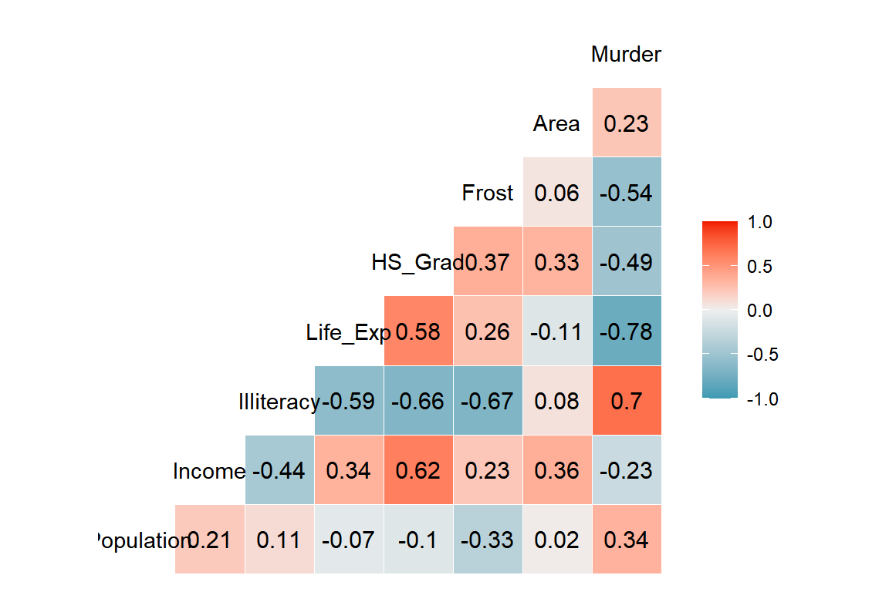
그림 1.1: 함수 ggcorr()에 의한 상관계수 그래프
반응변수를 마지막 변수로 이동시켰기 때문에 반응변수와 다른 설명변수 사이의 상관계수를 편하게 확인할 수 있다. 반응변수 Murder가 설명변수 Illiteracy와는 비교적 높은 양의 상관관계를, Life_Exp와는 비교적 높은 음의 상관관계를 보이고 있다.
상관계수는 두 변수 사이의 선형관계 정도만을 측정하는 측도이다. 변수 사이에 존재하는 ’있는 그대로’의 관계를 확인하는 가장 좋은 방법은 산점도행렬이다. 함수 GGally::ggpairs()로 작성해 보자.
> ggpairs(states, lower = list(continuous = "smooth"))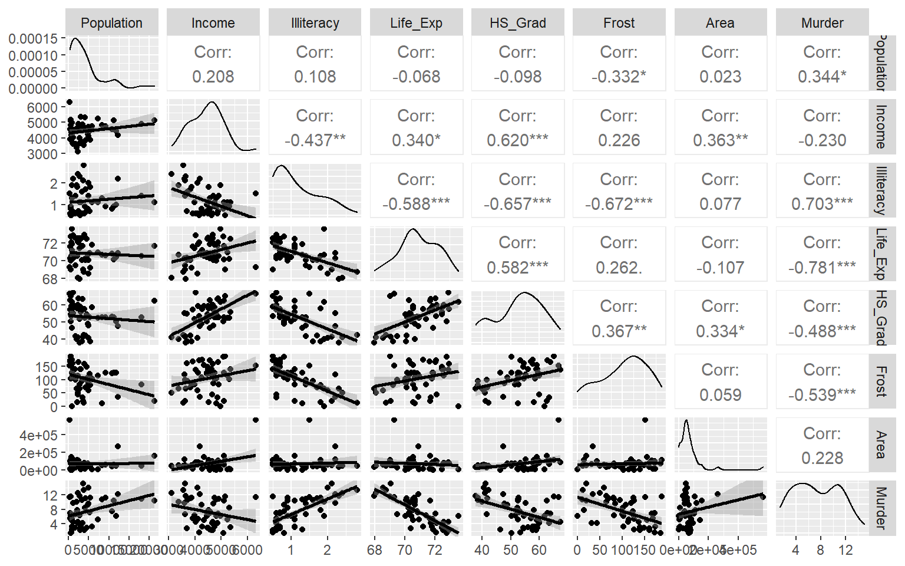
그림 1.2: 함수 ggpairs()에 의한 산점도행렬
반응변수를 마지막 변수로 위치를 이동시켰기 때문에 산점도행렬의 마지막 행을 이루고 있는 모든 패널에서 Murder가 Y축 변수로 배치되고, 설명변수들이 각각 X축 변수로 배치되었다.
\(\bullet\) 함수 lm()에 의한 선형회귀모형 적합
회귀모형의 적합이란 회귀계수의 추정을 의미하는 것이다. 일반적인 최소제곱법(ordinary least squares; OLS)에 의한 회귀모형의 적합은 함수 lm()으로 할 수 있으며, 일반적인 사용법은 lm(formula, data, subset, weights, ...)이다. formula는 설정된 회귀모형을 나타내는 모형 공식이고, data는 회귀분석에 사용될 데이터 프레임을 지정하는 것이다. 또한 weights는 각 관찰값에 가중치를 부여하고자 하는 경우 가중치를 나타내는 숫자형 벡터를 입력하면 되며, subset은 데이터의 일부분만을 이용하여 회귀분석을 실시하고자 하는 경우 사용할 수 있다. 예를 들어 처음 100개의 데이터만을 이용하여 데이터 프레임 df의 변수 y에 대한 변수 x의 회귀모형을 적합하고자 하는 경우에 대한 표현식은 다음과 같다.
lm(y ~ x, data = df, subset = 1:100)또한 만일 변수 z의 값이 0 이상이 되는 케이스에 대해서만 회귀분석을 실시하고자 한다면 다음과 같이 실행시키면 된다.
lm(y ~ x, data = df, subset = z >= 0)다양한 형태의 회귀모형을 표현하기 위하여 구성요소 formula에는 몇 가지 기호가 사용되는데, 자세한 사용법이 아래 표에 정리되어 있다.
| 기호 | 사용법 |
|---|---|
물결표 (~) |
반응변수와 설명변수의 구분. 물결표의 왼쪽에는 반응변수, 오른쪽에는 설명변수를 둔다. |
플러스 (+) |
모형에 포함된 설명변수의 구분. 반응변수 y와 설명변수 x1, x2, x3의 회귀모형은 y ~ x1 + x2 + x3로 표현된다. |
콜론 (:) |
설명변수 사이의 상호작용 표현. 반응변수 y와 설명변수 x1, x2 그리고 x1과 x2의 상호작용이 포함된 모형은 y ~ x1 + x2 + x1:x2로 표현된다. |
별표 (*) |
모든 가능한 상호작용 표현. y ~ x1 * x2 * x3는 y ~ x1 + x2 + x3 + x1:x2 + x1:x3 + x2:x3 + x1:x2:x3를 의미한다. |
윗꺽쇠 (^) |
지정된 차수까지의 상호작용 표현. y ~ (x1 + x2 + x3)^2는 y ~ x1 + x2 + x3 + x1:x2 + x1:x3 + x2:x3을 의미한다. |
점 (.) |
반응변수를 제외한 데이터 프레임에 있는 모든 변수. 만일 데이터 프레임에 y, x1, x2, x3가 있다면 y ~ . 은 y ~ x1 + x2 + x3을 의미한다. |
마이너스(-) |
회귀모형에서 제외되는 변수. y ~ (x1 + x2 + x3)^2 – x2:x3는 y ~ x1 + x2 + x3 + x1:x2 + x1:x3을 의미한다. |
- 1, + 0 |
절편 제거. y ~ x – 1 혹은 y ~ x + 0은 원점을 지나는 회귀모형을 의미한다. |
I() |
괄호 안의 연산자를 수학 연산자로 인식. y ~ x1 + I(x2+x3)는 \(y=\beta_{0}+\beta_{1}x_{1}+\beta_{2}(x_{2}+x_{3})+\varepsilon\) 모형을 의미한다. |
\(\bullet\) 예제 : state.x77
states 자료에 대한 회귀모형을 함수 lm()으로 적합해 보자.
> fit <- lm(Murder ~ ., data = states)
> fit
Call:
lm(formula = Murder ~ ., data = states)
Coefficients:
(Intercept) Population Income Illiteracy Life_Exp HS_Grad
1.222e+02 1.880e-04 -1.592e-04 1.373e+00 -1.655e+00 3.234e-02
Frost Area
-1.288e-02 5.967e-06 함수 lm()으로 생성된 객체 fit을 단순하게 출력시키면 추정된 회귀계수만 나타나지만, 사실 객체 fit은 다음과 같이 많은 양의 정보가 담겨 있는 리스트이다.
> names(fit)
[1] "coefficients" "residuals" "effects" "rank"
[5] "fitted.values" "assign" "qr" "df.residual"
[9] "xlevels" "call" "terms" "model" 사용자마다 필요한 정보가 서로 다를 수 있기 때문에 SAS나 SPSS에서와 같이 모든 결과물을 한 번에 출력하는 것은 좋은 방법이 아닐 수 있다. 객체 fit에 담겨 있는 다양한 정보를 획득하기 위해서는 몇 가지 함수를 사용해야 하는데, 그 함수의 목록이 아래 표에 정리되어 있다. 표에 정리되어 있는 함수를 이용하여 함수 lm()으로 생성된 객체에서 필요한 결과를 확인하는 방법 및 해석에 대해서는 1.2절에서 살펴보겠다.
| 함수 | 산출 결과 |
|---|---|
anova() |
추정된 회귀모형의 분산분석표 혹은 두 개 이상의 추정된 모형을 비교하기 위한 분산분석표 |
coefficients() |
추정된 회귀계수. coef()도 가능. |
confint() |
회귀계수의 신뢰구간. 95% 신뢰구간이 디폴트. |
deviance() |
잔차제곱합(residual sum of squares; RSS), \(\sum (y_{i}-\hat{y}_{i})^{2}\) |
fitted() |
반응변수의 적합값, \(\hat{y}_{i}\) |
residuals() |
회귀모형의 잔차, \(e_{i}=y_{i}-\hat{y}_{i}\) . resid()도 가능. |
summary() |
회귀모형의 다양한 적합 결과 |
1.1.3 다항회귀모형
반응변수와 설명변수 사이의 관계가 선형이 아닌 경우가 있다. 이런 경우에는 설명변수의 제곱항을 모형에 추가하는 다항회귀모형이 좋은 대안이 될 수 있다. \(p\) 차 다항회귀모형은 다음과 같이 설정된다.
\[\begin{equation} Y = \beta_{0} + \beta_{1}X + \beta_{2}X^{2} + \cdots + \beta_{p}X^{p} + \varepsilon \tag{1.6} \end{equation}\]차수 \(p\) 는 가능한 낮게 잡는 것이 좋은데, 그것은 너무 높은 차수의 항을 모형에 포함시키면 \(\left( \mathbf{X}^{T} \mathbf{X} \right)^{-1}\) 가 불안정해질 수 있고, 따라서 회귀계수 추정에 문제가 생길 수 있기 때문이다.
일단 차수가 선택되면, 선택된 차수 이하의 모든 차수는 반드시 모형에 포함되어야 한다. 예를 들어 \(Y=\beta_{0}+\beta_{1}X+\beta_{2}X^{2}+\varepsilon\) 모형에서 어떠한 이유에서 \(X\) 의 1차항을 제거한다면, 모형은 \(Y=\beta_{0}+\beta_{2}X^{2}+\varepsilon\) 가 되는데, 이 모형은 Y축을 중심으로 좌우대칭을 이루어야 하는 지나치게 강한 가정을 갖게 된다. 또한 만일 변수 \(X\) 의 값을 \(a\) 만큼 평행 이동시켜야 한다면, \(X\) 가 \(X+a\) 로 변경되어 모형에 다시 1차항이 나타나게 된다.
다항회귀모형은 함수 poly()를 이용하거나 또는 함수 I()를 이용해서 적합할 수 있다. 함수 poly()는 함수 lm()과 함께 lm(y ~ poly(x, degree = 1, raw = FALSE), data)와 같이 사용할 수 있다. degree는 다항회귀모형의 차수를 지정하는 것으로 디폴트 값은 1차이고, raw는 직교다항회귀(orthogonal polynomial regression)의 사용 여부를 선택하는 것으로서 디폴트 값인 FALSE는 직교다항회귀에 의한 적합이 된다. 따라서 일반적인 다항회귀모형을 사용하고자 한다면 반드시 raw에 TRUE를 지정해야 한다. 차수가 높지 않은 일반적인 다항회귀모형을 적합하는 경우에는 함수 I()를 사용하는 것이 더 간편할 수 있다. 함수 lm() 안에서 lm(y ~ x + I(x^2), data)와 같이 입력하면 2차 다항회귀모형을 적합하게 된다.
\(\bullet\) 예제 : women
데이터 프레임 women에는 미국 30대 여성의 키(height)와 몸무게(weight)가 입력되어 있다. 두 변수 height와 weight의 회귀모형을 설정해 보자. 먼저 두 변수의 관계가 선형인지 여부를 그래프로 확인해 보자.
> ggplot(women, aes(x = height, y = weight)) +
+ geom_point(size = 3) +
+ geom_smooth(aes(color = "loess"), se = FALSE) +
+ geom_smooth(aes(color = "linear"), method="lm", se = FALSE) +
+ labs(color = "")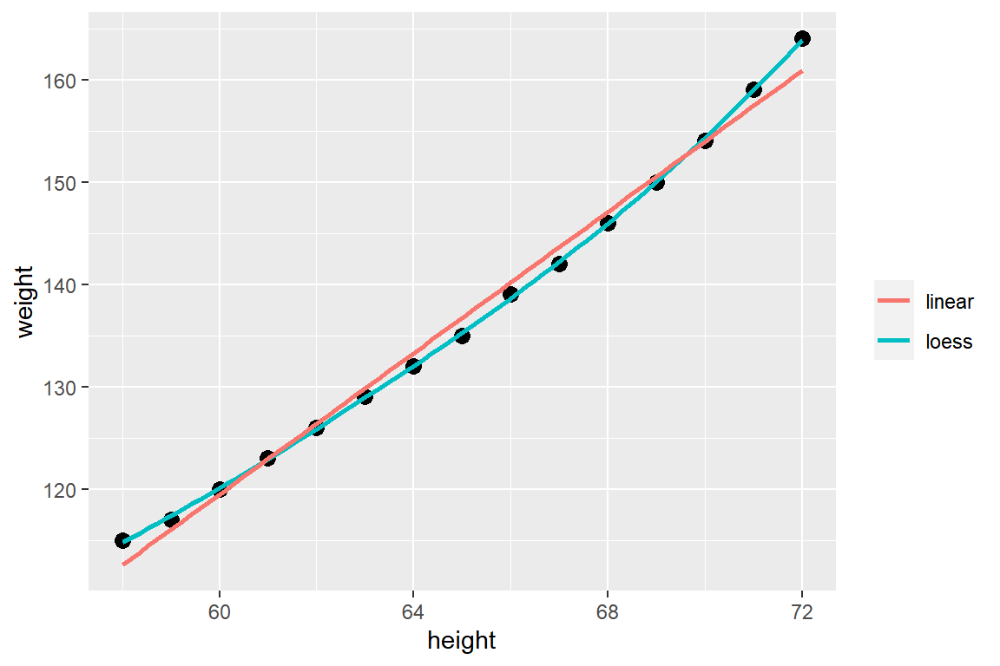
그림 1.3: 데이터 프레임 women의 변수 height와 weight의 산점도와 선형회귀직선 및 국소회귀곡선
두 변수의 관계가 선형보다는 2차 곡선이 더 적합한 것으로 보인다. 반응변수 weight에 대한 설명변수 height의 2차 다항회귀모형을 적합해 보자.
> fit_w <- lm(weight ~ height + I(height^2), women)
> fit_w
Call:
lm(formula = weight ~ height + I(height^2), data = women)
Coefficients:
(Intercept) height I(height^2)
261.87818 -7.34832 0.08306 적합된 회귀모형식은 \(\hat{y}_{i}=261.87 - 7.348x_{i} + 0.08x_{i}^{2}\) 이다.
1.1.4 가변수 회귀모형
선형회귀모형에서 반응변수는 유형이 반드시 연속형이어야 하며, 정규분포의 가정이 필요하다. 반면에 설명변수는 연속형 변수와 범주형 변수가 모두 가능한데, 연속형인 경우에는 정규분포의 가정은 필요 없으나 가능한 좌우대칭에 가까운 분포를 하는 것이 좋다. 범주형 변수 중 순서형 변수인 경우에는 연속형 변수처럼 변수의 값을 그대로 사용하는 것이 가능하지만, 명목형 변수의 경우에는 변수의 값을 그대로 사용하면 절대로 안 되고, 반드시 가변수(dummy variable)를 대신 사용해야 한다.
가변수를 설정하는 방식은 몇 가지가 있는데, 그 중 회귀계수 \(\beta_{0}\) 를 유지하는 방식을 살펴보자. 이 경우, 가변수는 0 또는 1의 값을 갖게 되며, 범주의 개수보다 하나 작은 개수의 가변수를 사용하게 된다. 예를 들어, “Yes”, “No”와 같은 2개의 범주를 갖는 범주형 변수와 연속형 변수 \(X\) 를 설명변수로 하는 회귀모형은 다음과 같이 하나의 가변수를 갖게 된다.
\[\begin{equation} Y = \beta_{0} + \beta_{1}X + \beta_{2}D + \varepsilon \tag{1.7} \end{equation}\]가변수 \(D\) 가 “Yes” 범주이면 1, “No” 범주이면 0을 값으로 갖는다면, 모집단 회귀직선은 다음과 같이 주어진다. \[ E(Y) = \begin{cases} \beta_{0} + \beta_{1}X & \quad \text{if } D = 0 \\ \beta_{0} + \beta_{2} + \beta_{1}X & \quad \text{if } D = 1 \end{cases} \]
\(D=0\) 이 되는 범주를 ’기준범주’라고 하는데, 절편 \(\beta_{0}\) 가 기준범주의 효과를 나타내고 있고, 가변수의 회귀계수 \(\beta_{2}\) 는 기준범주와 “Yes” 범주의 효과 차이를 나타내고 있다. 따라서 식 (1.7)의 회귀모형에서 반응변수 \(Y\) 와 설병변수 \(X\) 의 관계는 “Yes”와 “No” 범주에서 기울기는 동일하고 절편만 차이가 있는 형태가 된다.
만일 범주형 변수가 3개의 범주를 갖는다면 2개의 가변수가 필요하게 된다. 예를 들어 “high”, “medium”, “low”의 3가지 범주를 갖는 범주형 변수와 연속형 변수 \(X\) 를 설명변수로 하는 회귀모형은 다음과 같은 형태를 갖게 된다.
\[\begin{equation} Y = \beta_{0} + \beta_{1}X + \beta_{2}D_{1} + \beta_{3}D_{2} + \varepsilon \end{equation}\]단, \(D_{1}\) 은 범주가 “high”이면 1, 아니면 0이고, \(D_{2}\) 는 범주가 “medium”이면 1, 아니면 0이 되는 가변수이다. 이 경우, 기준범주는 “low”가 되며, \(\beta_{2}\) 는 기준범주와 “high” 범주의 효과 차이를, \(\beta_{3}\) 은 기준범주와 “medium” 범주의 효과 차이를 나타내고 있다.
\(\bullet\) 예제 : carData::Leinhardt
carData::Leinhardt는 1970년대 105개 나라의 신생아 사망률, 소득, 지역 및 원유 수출 여부 자료가 입력되어 있다. 반응변수를 신생아 시망률(infant)로 하고, 나머지 변수인 소득(income), 원유 수출 여부(oil)과 지역(region)을 설명변수로 설정하자. 변수 oil은 'no'와 'yes'의 2개 범주를 갖고 있고, 변수 region은 'Africa', 'America', 'Asia', 'Europe'의 4개 범주를 갖고 있다.
> data(Leinhardt, package = "carData")
> Leinhardt |> head()
income infant region oil
Australia 3426 26.7 Asia no
Austria 3350 23.7 Europe no
Belgium 3346 17.0 Europe no
Canada 4751 16.8 Americas no
Denmark 5029 13.5 Europe no
Finland 3312 10.1 Europe no산점도행렬을 작성해 보자. 변수 income과 infant의 분포가 오른쪽 꼬리가 매우 긴 형태를 갖고 있으며, oil이 'yes'인 자료가 매우 드물다는 것을 알 수 있다.
> library(GGally)
> ggpairs(Leinhardt)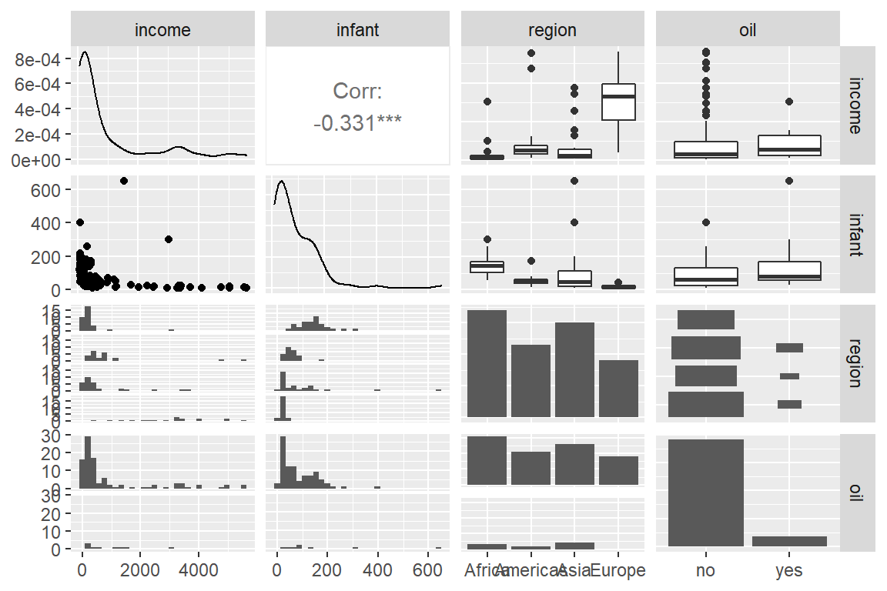
그림 1.4: Leinhardt 변수의 산점도 행렬
반응변수의 경우에 정규분포 가정이 있지만, 설명변수의 분포 형태에 대해서는 특별한 가정은 없다. 하지만 꼬리가 지나치게 긴 분포의 경우에는 대략 좌우대칭이 될 수 있도록 변환을 시키는 것이 좋다. 변수 income과 infant를 로그변환시키고 다시 산점도행렬을 작성해 보자.
> library(tidyverse)
> Leinhardt_ln <- Leinhardt %>%
+ mutate(ln_income = log(income), ln_infant = log(infant),
+ .before = 1) %>%
+ select(-income, -infant)> Leinhardt_ln %>%
+ ggpairs()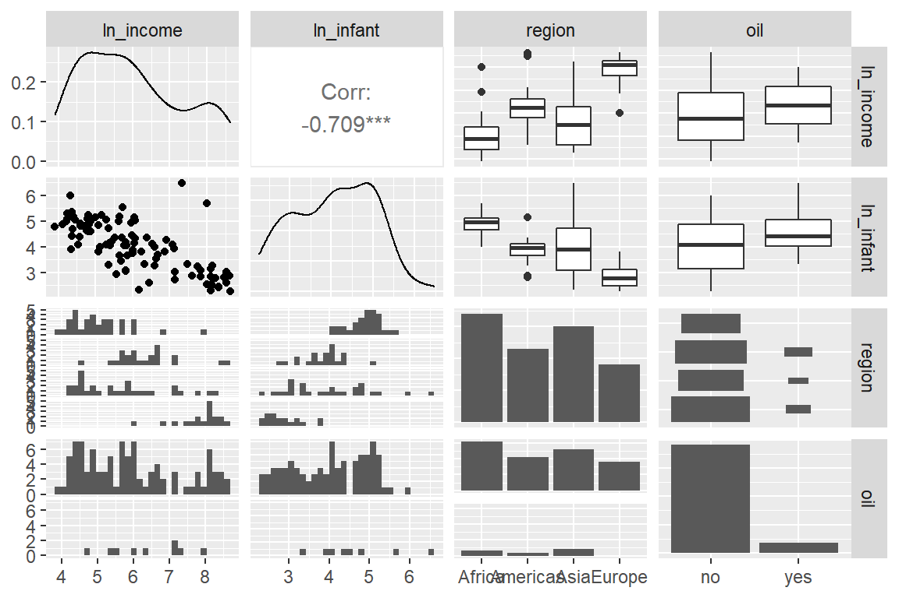
그림 1.5: Leinhardt_ln 변수의 산점도 행렬
변수 ln_income과 oil만을 설명변수로 하여 회귀모형을 적합해 보자. 함수 lm()은 요인을 설명변수로 입력하면 자동으로 필요한 개수의 가변수를 생성한다.
> lm(ln_infant ~ ln_income + oil, Leinhardt_ln)
Call:
lm(formula = ln_infant ~ ln_income + oil, data = Leinhardt_ln)
Coefficients:
(Intercept) ln_income oilyes
7.1396 -0.5211 0.7900 변수 oil의 수준은 'no'와 'yes'의 두 가지이지만 모형에 포함된 가변수는 한 개이다. 이것은 절편이 모형에 포함된 상태에서 요인의 수준 개수만큼 가변수를 포함시키면 회귀계수 전체를 추정할 수 없는 문제가 발생하기 때문이다. 생략된 가변수는 알파벳 순서에서 첫 번째 범주인 'no'에 대한 것이며, 이 범주가 기준 범주가 된다. 범주 'yes'에 대한 가변수의 회귀계수는 기준 범주와의 효과 차이를 나타낸 것이며, 양의 값으로 추정되었으므로 'yes' 범주의 신생아 사망률이 더 높다고 해석할 수 있다.
설명변수를 모두 포함한 회귀모형을 적합해 보자.
> lm(ln_infant ~ ln_income + oil + region, Leinhardt_ln)
Call:
lm(formula = ln_infant ~ ln_income + oil + region, data = Leinhardt_ln)
Coefficients:
(Intercept) ln_income oilyes regionAmericas regionAsia
6.5521 -0.3398 0.6402 -0.5498 -0.7129
regionEurope
-1.0338 변수 region의 기준범주는 'Africa'가 이며, region에 대한 모든 가변수의 회귀계수가 음수로 추정되었다는 것은 다른 모든 지역이 'Africa' 지역보다 신생아 사망률이 더 낮다는 것을 의미한다.
1.2 회귀모형의 추론
1.1절에서 우리는 다항회귀모형과 가변수 회귀모형 등 몇 가지 형태의 다중회귀모형을 살펴보았고, 최소제곱추정량에 의한 회귀계수의 추정 방법도 살펴보았다. 지금부터는 회귀계수의 추론에 대해 살펴보도록 하자. 반응변수와 설명변수에 대해 자료가 관측되면, 회귀계수에 대한 추정 뿐 아니라 다양한 추론도 진행할 수 있다. 회귀모형에 대한 적절한 해석을 하기 위해 필요한 회귀계수와 관련된 가설 검정 및 개별 회귀계수의 신뢰구간 추정에 대해 살펴보자.
1.2.1 회귀모형의 유의성 검정
식 (1.3)의 회귀모형에 포함된 설명변수 중 반응변수의 변동을 설명하는데 유의적인 변수가 적어도 하나라도 있는지 알아보는 검정이다. 귀무가설은 다음과 같고,
\[\begin{equation} H_{0}:\beta_{1}=\beta_{2}=\cdots=\beta_{k}=0 \tag{1.8} \end{equation}\]대립가설은 다음과 같다.
\[\begin{equation} H_{1}: \text{at least one of }\beta_{j} \ne 0 \end{equation}\]가설에 대한 검정통계량은 다음과 같다. \[\begin{equation} F = \frac{(TSS-RSS)/k}{RSS/(n-k-1)} \end{equation}\]
귀무가설이 사실일 때 검정통게량의 분포는 \(F_{k,~n-k-1}\) 이다.
검정통계량의 구성을 살펴보자. \(TSS=\sum(y_{i}-\overline{y})^{2}\) 는 반응변수의 총변량으로써 설명변수와는 관련이 없는 변량이다. \(RSS = \sum(y_{i}-\hat{y}_{i})^{2}\) 는 잔차제곱합으로써 \(y_{i}\) 를 \(\hat{y}_{i}\) 으로 예측한 오차이며, 회귀모형으로 설명이 안 된 변량이라고 할 수 있다. 따라서 총변량에서 설명이 안 된 변량을 제외한 \(TSS-RSS\) 는 회귀모형으로 설명된 변량이라고 할 수 있다.
검정통계량의 분모는 \(RSS\)를 자신의 자유도 \((n-k-1)\) 로 나눈 것인데, 이것은 회귀모형의 가정이 만족되는 경우에는 귀무가설의 사실 여부와 관계 없이 오차항의 분산인 \(\sigma^{2}\)의 불편추정량이 된다. 즉, \(E(RSS/(n-k-1))=\sigma^{2}\) 가 된다. 검정통계량의 분자인 \((TSS-RSS)/k\) 는 \(H_{0}\) 이 사실인 경우에는 \(\sigma^{2}\) 의 불편추정량이 되지만, \(H_{0}\) 이 사실이 아닌 경우에는 \(E((TSS-RSS)/k) > \sigma^{2}\) 가 된다. 따라서 검정통계량이 1보다 상당히 큰 값이 되면 \(H_{0}\)이 사실이 아닐 가능성이 높게 되며, 기각역은 자유도가 \((k, ~n-k-1)\) 인 \(F\) 분포에서 결정된다.
가설 (1.8)이 기각되면 모형에 포함된 설명변수 중 유의한 변수가 있다는 것이므로, 개별 회귀계수에 대한 유의성 검정을 진행할 수 있다. 그러나 만일 가설을 기각할 수 없다면 식 (1.3)의 회귀모형으로는 반응변수의 변동을 제대로 설명할 수 없다는 것이 된다. 이런 결과가 나오면, 다른 설명변수의 조합을 찾아 보거나, 또는 다른 형태의 회귀모형을 시도해 봐야 한다.
1.2.2 개별회귀계수 유의성 검정
식 (1.3)에 정의된 회귀모형을 구성하고 있는 개별 설명변수의 유의성을 검정하는 절차이다. 가설은 다음과 같다.
\[\begin{equation} H_{0}: \beta_{j} = 0, \quad H_{1}: \beta_{j} \ne 0, \quad j = 1, \ldots, k \tag{1.9} \end{equation}\]검정통계량은 개별 회귀계수의 추정량 \(\hat{\beta}_{j}\) 를 추정량의 표준오차로 나눈 것이다.
\[\begin{equation} T = \frac{\hat{\beta}_{j}}{SE(\hat{\beta}_{j})} \end{equation}\]귀무가설이 사실일 때 검정통계량의 분포는 \(t_{n-k-1}\) 이다.
개별 회귀계수에 대한 검정은 양측검정이 되며, 따라서 회귀계수의 신뢰구간과 밀접한 관련이 있다. 개별 회귀계수에 대한 95% 신뢰구간은 회귀계수와 추정량과 추정량의 표준오차를 이용하여 대략적으로 다음과 같이 표시된다.
\[\begin{equation} \hat{\beta}_{j} \pm 2 \cdot SE(\hat{\beta}_{j}) \end{equation}\]만일 주어진 자료를 근거로 계산된 \(\beta_{j}\) 의 95% 신뢰구간에 0이 포함되어 있다면, 같은 자료로 계산한 검정통계량의 값은 5% 유의수준으로 구성된 기각역에 들어갈 수 없게 되어서 귀무가설을 기각할 수 없게 된다.
1.2.3 두 회귀모형의 비교
반응변수의 변동을 설명하는데 식 (1.3) 회귀모형의 설명변수를 모두 사용하는 것이 좋은지 아니면 일부분만을 사용하는 것이 더 좋은지 비교하는 절차이다. 비교하는 두 모형은 확장모형( \(\Omega\) )인 모형 (1.3)과 특정 \(q\) 개의 회귀계수에 대한 다음의 가설이 사실인 축소모형( \(\omega\) )이다.
\[\begin{equation} H_{0}: \beta_{k-q+1}=\beta_{k-q+2}=\cdots=\beta_{k}=0 \tag{1.10} \end{equation}\]두 모형의 설명력 차이가 크지 않다면 ’모수절약의 원칙’에 의하여 축소모형을 선택하는 것이 더 좋을 것이다. 모형의 설명력 비교는 잔차제곱합을 이용할 수 있는데, 만일 확장모형의 잔차제곱합, \(RSS_{\Omega}\) 와 축소모형의 잔차제곱합, \(RSS_{\omega}\) 의 차이가 크지 않다면, 축소모형의 설명력이 확장모형 만큼 좋다는 의미가 된다.
검정통계량은 다음과 같이 구성된다.
\[\begin{equation} F=\frac{(RSS_{\omega}-RSS_{\Omega})/q}{RSS_{\Omega}/(n-k-1)} \end{equation}\]귀무가설이 사실일 때 검정통게량의 분포는 \(F_{q,~n-k-1}\) 이다.
1.2.4 회귀모형의 평가 측도
회귀모형을 적합하는 목적은 반응변수 변량의 단순 설명 뿐 아니라 반응변수 값의 예측도 있다. 반응변수의 변량을 충분히 설명하는 것이 주된 목적이라면 결정계수를 모형의 평가 측도로 사용하는 것이 좋을 것이다. 그러나 정확한 예측을 목적으로 한다면 결정계수가 아닌 다른 평가 측도를 사용해야 한다.
- 결정계수(\(R^{2}\) )
결정계수는 반응변수의 총변량 중 회귀모형으로 설명된 변량의 비율을 의미한다.
\[\begin{equation} R^{2} = \frac{TSS-RSS}{TSS} = 1-\frac{RSS}{TSS} \end{equation}\]단순회귀모형에서 결정계수는 \(Y\) 와 \(X\) 의 상관계수인 \(r=Cor(X,Y)\)의 제곱과 같고, 다중회귀모형에서는 \(Y\) 와 \(\hat{Y}\) 의 상관계수 제곱, \(Cor(Y, \hat{Y})^{2}\) 과 같다. 결정계수는 회귀모형에 설명변수가 추가되면 무조건 증가하는 특성이 있기 때문에 설명변수의 개수가 다른 회귀모형의 평가 측도로는 적절하지 않다고 할 수 있다.
- 수정결정계수(\(adj~R^{2}\) )
회귀모형에 설명변수가 추가되면 무조건 값이 증가하는 결정계수의 문제를 보완한 측도이다. 추가된 설명변수가 모형의 설명력 향상에 도움이 되는 경우에만 값이 증가되도록 결정계수를 수정한 측도이다.
\[\begin{equation} adj~R^{2}=1-\frac{RSS/(n-k-1)}{TSS/(n-1)} \end{equation}\]- Residual standard error(RSE)
잔차제곱합, \(RSS\) 는 반응변수의 총변량 중에 회귀모형으로 설명이 되지 않는 변량으로써, 결정계수의 값을 결정하는 요소이며, 회귀모형에 설명변수가 추가되면 무조건 감소하는 특성을 가지고 있다. 이러한 특성은 다음과 같이 잔차제곱합을 자신의 자유도로 나누면 수정이 된다.
\[\begin{equation} RSE = \sqrt{\frac{RSS}{n-k-1}} \tag{1.11} \end{equation}\]수정결정계수와 실질적으로 동일한 특성을 가지고 있는 측도로써, 추가된 설명변수가 모형의 설명력 향상에 도움이 되는 경우에만 값이 감소하는 특성을 가지고 있다.
- Information criteria
회귀모형의 오차항에 대한 분포를 가정하고 있기 때문에 Likelihood function은 어렵지 않게 구성할 수 있는데, 회귀모형에 설명변수를 추가함으로써 모수의 개수가 증가하게 되면 Maximum likelihood의 값도 자연스럽게 증가하게 된다. 이것은 결정계수의 특성과 유사한 것이며, 따라서 설명변수 증가에 대한 penalty를 부과하는 측도를 생각해 볼 수 있다.
AIC와 BIC는 다음과 같이 정의된다.
\[\begin{align*} AIC &= -2\log \hat{L} + 2K \\ BIC &= -2\log \hat{L} + k\log n \end{align*}\]단, \(\hat L\) 은 maximum likelihood function이고, \(n\) 은 자료의 크기, \(k\) 는 설명변수의 개수이다. 회귀모형에 설명변수가 추가되면, \(\hat L\) 의 값은 증가하게 되고, 따라서 \(-2\log \hat L\) 은 감소한다. 설명변수 증가에 대한 penalty로써 AIC는 \(2k\)를, BIC는 \(k \log n\)를 사용하고 있는데, 설명변수를 추가함으로써 증가된 penalty의 값보다 모형의 적합도 향상으로 감소된 \(-2 \log \hat L\) 의 값이 더 크다면 AIC나 BIC는 감소하게 된다.
따라서 추가된 설명변수가 모형의 적합도 향상에 도움이 되는 경우에만 값이 감소하는 특성을 가지고 있다.
- Cross-validation(CV)
CV는 회귀모형의 예측력을 평가할 수 있는 resampling 기법이다. 예측 목적으로 설정된 회귀모형의 경우에는 모형 적합에 사용된 자료의 변동 설명보다 적합에 사용되지 않은 자료에 대한 예측 오차가 더 중요한 평가 요소라고 할 수 있다. 통계모형 적합에 사용되지 않은 새로운 자료에 대한 예측 오차를 test error라고 하는데, 회귀모형의 예측 결과에 대한 정당성을 확보하기 위해서는 낮은 test error가 필수적이다.
CV는 모형 적합에 사용되는 자료인 training data를 이용해서 test error를 추정하기 위한 resampling 기법이다. 몇 가지 조금 다른 방법이 있는데, 여기에서는 k-fold CV라는 방법에 대해서만 살펴보겠다. k-fold CV는 training data를 비슷한 크기의 k개 그룹(fold)으로 분리하는 것으로 시작한다. 분리된 k개의 그룹 중 첫 번째 그룹의 자료를 제외하고, 나머지 (k-1)개 그룹의 자료를 사용해서 적합한 회귀모형으로 적합 과정에서 제외된 첫 번째 그룹에 대한 예측을 실시하고 예측 오차를 계산한다.
이어서 각 그룹의 자료를 하나씩 차례로 제외하고 나머지 자료로 적합 및 예측하는 과정을 반복하여 k번의 예측을 실시한다. Test error는 k번의 예측에서 각각 발생된 예측 오차의 평균으로 추정한다.
1.2.5 회귀모형 추론을 위한 함수
함수 lm()으로 생성된 객체를 대상으로 회귀모형의 추론을 위한 함수의 사용법을 예제와 함께 살펴보자.
\(\bullet\) 함수 summary()
1.1.2절에서 생성된 데이터 프레임 states를 예제로 회귀모형의 추론 단계에서 가장 빈번하게 사용되는 함수 summary()의 결과를 확인해 보자.
> library(tidyverse)
> states <- as_tibble(state.x77) %>%
+ rename(Life_Exp = 'Life Exp', HS_Grad = 'HS Grad')> fit1 <- lm(Murder ~ ., states)
> summary(fit1)
Call:
lm(formula = Murder ~ ., data = states)
Residuals:
Min 1Q Median 3Q Max
-3.4452 -1.1016 -0.0598 1.1758 3.2355
Coefficients:
Estimate Std. Error t value Pr(>|t|)
(Intercept) 1.222e+02 1.789e+01 6.831 2.54e-08 ***
Population 1.880e-04 6.474e-05 2.905 0.00584 **
Income -1.592e-04 5.725e-04 -0.278 0.78232
Illiteracy 1.373e+00 8.322e-01 1.650 0.10641
Life_Exp -1.655e+00 2.562e-01 -6.459 8.68e-08 ***
HS_Grad 3.234e-02 5.725e-02 0.565 0.57519
Frost -1.288e-02 7.392e-03 -1.743 0.08867 .
Area 5.967e-06 3.801e-06 1.570 0.12391
---
Signif. codes: 0 '***' 0.001 '**' 0.01 '*' 0.05 '.' 0.1 ' ' 1
Residual standard error: 1.746 on 42 degrees of freedom
Multiple R-squared: 0.8083, Adjusted R-squared: 0.7763
F-statistic: 25.29 on 7 and 42 DF, p-value: 3.872e-13함수 lm()으로 생성된 객체에 함수 summary()를 적용시켜 얻은 결과물은 SAS나 SPSS에서 볼 수 있는 결과물과는 형식에서 차이가 있으나 많은 정보를 매우 효과적으로 보여주는 방식이라고 할 수 있다. 결과물을 하나씩 살펴보자.
먼저 Residuals:에는 잔차의 분포를 엿볼 수 있는 요약통계가 계산되어 있다. 가정이 만족된다면 잔차는 평균이 0인 정규분포를 보이게 되는데, 잔차의 요약 통계 결과 값으로 대략적인 판단을 할 수 있다.
Coefficients:에는 회귀계수의 추정값과 표준오차가 계산되어 있다. 또한 개별 회귀계수의 유의성 검정인 \(H_{0}:\beta_{j} = 0, \quad H_{1}: \beta_{j} \ne 0\) 에 대한 검정통계량의 값과 p-값이 계산되어 있다
Residual standard error:는 회귀모형의 평가 측도 중 하나로 식 (1.11)에 정의되어 있다. Multiple R-squared:는 결정계수 \(R^{2}\) 이고, Adjusted R-squared:는 수정결정계수의 값이다. F-statistic:은 모든 회귀계수가 0이라는 가설, 즉 \(H_{0}:\beta_{1}=\beta_{2}=\cdots=\beta_{k}=0\) 에 대한 검정통계량의 값과 자유도, 그리고 p-값이 계산되어 있다.
\(\bullet\) 함수 anova()
함수 summary()로 얻어지는 결과물로 회귀모형에 대한 중요한 추론이 가능함을 알 수 있다. 한 가지 SAS나 SPSS에 익숙한 사용자들에게 아쉬울 수 있는 점은 아마도 회귀모형의 분산분석표가 출력되지 않는다는 것일 텐데, 이것은 함수 anova()를 사용함으로써 해결할 수 있다.
> anova(fit1)
Analysis of Variance Table
Response: Murder
Df Sum Sq Mean Sq F value Pr(>F)
Population 1 78.854 78.854 25.8674 8.049e-06 ***
Income 1 63.507 63.507 20.8328 4.322e-05 ***
Illiteracy 1 236.196 236.196 77.4817 4.380e-11 ***
Life_Exp 1 139.466 139.466 45.7506 3.166e-08 ***
HS_Grad 1 8.066 8.066 2.6460 0.1113
Frost 1 6.109 6.109 2.0039 0.1643
Area 1 7.514 7.514 2.4650 0.1239
Residuals 42 128.033 3.048
---
Signif. codes: 0 '***' 0.001 '**' 0.01 '*' 0.05 '.' 0.1 ' ' 1함수 anova()는 두 회귀모형을 비교할 때에도 사용되는 함수이다. 비교되는 두 모형은 확장모형과 확장모형의 부분집합인 축소모형이어야 한다. 확장모형의 부분집합이라는 것은 확장모형의 일부 회귀계수가 0이 되는 모형을 의미하는 것으로써, 확장모형에 없는 설명변수가 축소모형에 포함되면 정상적인 비교가 이루어질 수 없다.
예를 들어 states 자료에서 모든 설명변수가 포함된 확장모형 fit1과 변수 Income, Illiteracy, HS_Grad의 회귀계수가 0인 축소모형 fit2를 비교해 보자. 함수 anova()에 의한 비교 방법은 anova(fit2, fit1)과 같이 축소모형이 먼저 지정되어야 한다.
> fit2 <- lm(Murder ~ Population + Life_Exp + Frost + Area, states)
> anova(fit2, fit1)
Analysis of Variance Table
Model 1: Murder ~ Population + Life_Exp + Frost + Area
Model 2: Murder ~ Population + Income + Illiteracy + Life_Exp + HS_Grad +
Frost + Area
Res.Df RSS Df Sum of Sq F Pr(>F)
1 45 137.75
2 42 128.03 3 9.7212 1.063 0.375함수 anova()로 검정이 실시된 귀무가설은 변수 Income, Illiteracy, HS_Grad의 회귀계수가 0이라는 것인데, p-값이 0.375으로 계산되어 귀무가설을 기각할 수 없게 되었다. 두 모형의 설명력에는 차이가 없다는 것이므로, 모수 절약의 원칙에 따라 축소모형을 선택하는 것이 더 좋다고 하겠다.
\(\bullet\) 함수 confint()
회귀계수의 신뢰구간은 함수 confint()로 계산할 수 있다. 95% 신뢰구간이 디폴트로 계산되며, 만일 신뢰수준을 변경하고자 한다면 옵션 level에 원하는 신뢰수준을 입력하면 된다. 객체 fit1에 포함되어 있는 회귀계수의 95% 신뢰구간은 다음과 같이 계산된다.
> confint(fit1)
2.5 % 97.5 %
(Intercept) 8.608453e+01 1.582763e+02
Population 5.739093e-05 3.186812e-04
Income -1.314619e-03 9.962053e-04
Illiteracy -3.063433e-01 3.052562e+00
Life_Exp -2.171926e+00 -1.137814e+00
HS_Grad -8.320224e-02 1.478789e-01
Frost -2.780257e-02 2.034427e-03
Area -1.702987e-06 1.363763e-05회귀계수의 95% 신뢰구간에 0이 포함됐다는 것은 5% 유의수준에서 가설 \(H_{0}:\beta_{j}=0, \quad H_{1}:\beta_{j} \ne 0\) 의 귀무가설을 기각할 수 없음을 의미한다. 따라서 95% 신뢰구간에 0이 포함된 변수 Income, HS_Grad, Frost, Area는 5% 유의수준에서 비유적인 변수인 것이다.
\(\bullet\) 예제 carData::Leinhardt
1.1.4절에서 살펴본 carData::Leinhardt의 예제에서 infant와 income을 로그 변환하여 Leinhardt_ln을 생성하였는데, Leinhardt_ln에는 범주형 변수인 oil과 region이 있으며, 두 변수를 설명변수로 회귀모형에 포함시킨다면 가변수를 사용해야 한다. 가변수를 사용하는 경우에 식 (1.7)에서와 같이 반응변수와 다른 연속형 설명변수의 관계, 즉 기울기가 동일하다고 가정할 수 있다. 그러나 범주형 변수로 구성되는 각 그룹별로 설명변수의 기울기가 다르다고 가정하는 것이 더 일반적인 접근이 될 수 있다. 만일 기울기가 그룹별로 다르다고 가정한다면 가변수와 다른 설명변수의 interaction term을 추가해야 한다. 예를 들어 연속형 변수 \(X\) 와 범주의 개수가 2개인 범주형 변수를 설명변수로 하는 회귀모형에서 가변수와 연속형 변수의 interaction term이 추가된 모형은 다음과 같이 표현된다.
이 경우에 모집단 회귀직선은 다음과 같다.
\[ E(Y) = \begin{cases} \beta_{0} + \beta_{1}X & \quad \text{if } D = 0 \\ (\beta_{0} + \beta_{2}) + (\beta_{1}+\beta_{3})X & \quad \text{if } D = 1 \end{cases} \]
연속형 설명변수와 가변수의 interaction term을 모형에 추가하는 것이 더 포괄적인 모형을 구축하는 방법이지만, 설명변수가 많은 경우에는 지나치게 많은 interaction term이 추가될 수 있어서 분석에 큰 부담이 될 수 있다. 반드시 필요한 interaction term을 선별해서 추가하는 것이 바람직하다.
Leinhardt_ln 자료에서 반응변수 ln_infant'에 대해 설명변수ln_income과oil의 회귀모형을 설정하되oil이“no”인 그룹과“yes”인 그룹에서ln_infant’와 ln_income의 관계가 같지 않다고 가정해 보자.
> data(Leinhardt, package = "carData")
> Leinhardt_ln <- Leinhardt %>%
+ mutate(ln_income = log(income), ln_infant = log(infant),
+ .before = 1) %>%
+ select(-income, -infant)회귀모형에 두 설명변수 변수의 interaction term을 추가해 보자.
> fit_L <- lm(ln_infant ~ ln_income*oil, Leinhardt_ln)
> summary(fit_L)
Call:
lm(formula = ln_infant ~ ln_income * oil, data = Leinhardt_ln)
Residuals:
Min 1Q Median 3Q Max
-1.59564 -0.31166 0.02369 0.35132 1.40499
Coefficients:
Estimate Std. Error t value Pr(>|t|)
(Intercept) 7.42765 0.27987 26.540 < 2e-16 ***
ln_income -0.56905 0.04542 -12.529 < 2e-16 ***
oilyes -5.37649 1.31025 -4.103 8.48e-05 ***
ln_income:oilyes 0.98100 0.20551 4.773 6.41e-06 ***
---
Signif. codes: 0 '***' 0.001 '**' 0.01 '*' 0.05 '.' 0.1 ' ' 1
Residual standard error: 0.5929 on 97 degrees of freedom
(4 observations deleted due to missingness)
Multiple R-squared: 0.6364, Adjusted R-squared: 0.6252
F-statistic: 56.59 on 3 and 97 DF, p-value: < 2.2e-16모든 회귀계수가 유의적임을 알 수 있는데, interaction term이 유의하다는 것은 산유국 여부가 절편 및 기울기 차이에 유의한 영향을 주고 있다는 의미가 된다.
세 변수의 관계를 그래프를 이용해서 조금 더 깊게 탐색해 보자.
> Leinhardt_ln %>%
+ ggplot(aes(x = ln_income, y = ln_infant)) +
+ geom_point() +
+ geom_smooth(method = "lm", se = FALSE) +
+ facet_wrap(vars(oil))
Warning: Removed 4 rows containing non-finite values (stat_smooth).
Warning: Removed 4 rows containing missing values (geom_point).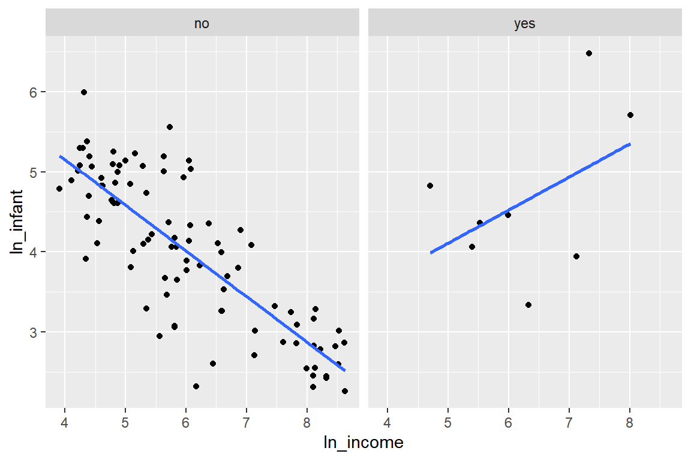
그림 1.6: 변수 oil의 두 그룹에서 ln_infant와 ln_income의 산점도
oil이 "no"인 그룹에서 ln_infant'와ln_income는 음의 관계를 가지고 있다. 소득이 증가하면 신생아 사망률이 감소하는 것은 당연한 것으로 보인다. 그러나oil이“yes”`인 그룹에서는 양의 관계를 보여주고 있는데, 이것은 소득 수준이 상당히 높은 두 나라의 신생아 사망률이 지나치게 높기 때문에 발생한 현상으로 보인다. 즉, 두 나라의 자료는 전혀 다른 얘기를 하고 있는 것으로 보인다. 두 점이 어떤 나라의 자료인지 확인해 보자.
> Leinhardt_ln %>%
+ filter(oil == "yes") %>%
+ slice_max(ln_infant, n = 2)
ln_income ln_infant region oil
Saudi.Arabia 7.333023 6.476972 Asia yes
Libya 8.009695 5.703782 Africa yes소득이 상당히 높지만 다른 나라의 경우와는 너무도 다르게 신생아 사망률이 지나치게 높은 두 나라의 자료는 제외되어야 할 것 같다. 두 자료를 제외하고 다시 회귀모형을 적합해 보자.
> Leinhardt_ln %>%
+ rownames_to_column(var = "country") %>%
+ filter(!(country %in% c("Saudi.Arabia", "Libya"))) %>%
+ lm(ln_infant ~ ln_income*oil, data = .) %>%
+ summary()
Call:
lm(formula = ln_infant ~ ln_income * oil, data = .)
Residuals:
Min 1Q Median 3Q Max
-1.59564 -0.29881 0.02503 0.34251 1.39357
Coefficients:
Estimate Std. Error t value Pr(>|t|)
(Intercept) 7.42765 0.26149 28.405 <2e-16 ***
ln_income -0.56905 0.04244 -13.410 <2e-16 ***
oilyes -0.90561 1.76281 -0.514 0.609
ln_income:oilyes 0.16568 0.29887 0.554 0.581
---
Signif. codes: 0 '***' 0.001 '**' 0.01 '*' 0.05 '.' 0.1 ' ' 1
Residual standard error: 0.5539 on 95 degrees of freedom
(4 observations deleted due to missingness)
Multiple R-squared: 0.6572, Adjusted R-squared: 0.6464
F-statistic: 60.71 on 3 and 95 DF, p-value: < 2.2e-16두 자료를 제외한 상태에서는 산유국 여부가 더 이상 유의한 변수가 아닌 것으로 나타났다.
1.3 변수선택
반응변수 \(Y\) 에 대한 다음의 회귀모형에는 모든 가능한 설명변수가 다 포함되어 있다고 가정하고, 그런 의미에서 full model이라고 하자.
\[\begin{equation} Y = \beta_{0} + \beta_{1}X_{1} + \cdots + \beta_{k}X_{k} + \varepsilon \tag{1.13} \end{equation}\]모든 가능한 설명변수가 다 포함된 모형 (1.13)을 근거로 실시한 예측 결과는 일반적으로 최상의 결과를 보여주지 못하는 것으로 알려져 있다. 많은 설명변수 중 모형 설명력을 실질적으로 향상시킬 수 있는 일부 변수만을 선택해서 회귀모형을 설정하는 것이 더 향상된 예측력을 기대할 수 있으며, 모형의 의미를 더 쉽게 해석할 수 있게 된다.
반응변수의 변동을 설명할 수 있는 많은 설명변수들 중에서 ’최적’의 설명변수를 선택하는 절차를 변수선택이라고 한다. 변수선택 방법은 크게 세 가지로 구분되는데, 검정에 의하여 단계적으로 모형을 찾아가는 방법과 다양한 평가측도를 이용하여 모형을 찾아가는 방법, 그리고 shrinkage 방법이 있다.
검정에 의한 변수선택은 SAS나 SPSS 등에서 일반적으로 이루어지는 방법으로서 후진소거법, 전진선택법과 단계별 선택법이 있다. 변수 선택 과정에서 요구되는 계산이 방대하지 않기 때문에 대규모의 설명변수가 있는 경우 손쉽게 중요 변수를 선택할 수 있다는 장점이 있는 방법이지만 변수의 선택과 제거가 ‘한 번에 하나씩’ 이루어지기 때문에 이른바 ‘최적’ 모형을 놓치는 경우가 발생할 수도 있다. 또한 각 단계마다 여러 번의 검정이 동시에 이루어지기 때문에 일종 오류를 범할 확률이 증가하는 검정의 정당성 문제가 발생할 수도 있다. 그리고 모형의 수립 목적이 예측인 상황에서는 변수선택 과정이 목적과 어울리지 않는다는 문제도 지니고 있는 등 많은 문제점이 있기 때문에 최근에는 거의 사용되지 않는 방법이다.
1.3.1 평가 측도에 의한 변수선택
평가 측도에 의한 방법은 1.2.4절에서 살펴본 \(AIC\), \(BIC\), \(adj~R^{2}\) 및 \(C_{p}\) 통계량 등을 기반으로 ‘최적’ 변수를 선택하는 방법이다. 모형 (1.13)의 full model에서 \(d\) 개의 설명변수를 선택하여 설정된 회귀모형에 대한 \(C_{p}\) 통계량은 다음과 같이 정의된다.
\[\begin{equation} C_{p} = \frac{1}{n} \left( RSS + 2d\hat{\sigma}^{2} \right) \tag{1.14} \end{equation}\]단, \(\hat{\sigma}^{2}\) 는 모형 (1.13)으로 추정한 오차항의 분산이며, \(RSS\) 는 잔차제곱합이다. 모형의 평가에서 \(AIC\), \(BIC\), \(C_{p}\) 값은 작을수록 좋은 모형이고, \(adj~R^{2}\)는 값이 클수록 좋은 모형이라 할 수 있다.
평가 측도를 사용한 방법은 세 가지로 구분된다. forward stepwise selection과 backward stepwise elimination, 그리고 best subset selection이 있다.
1. Forward stepwise selection
절편만 있는 모형 \(M_{0}~(Y=\beta_{0}+\varepsilon)\) 에서 시작하여 단계적으로 변수를 하나씩 모형에 추가하는 방법이다. 추가할 변수를 선택하는 절차는 다음과 같이 두 가지 방식이 있다.
\(\bullet\) 방식 1
\(AIC\) 등을 기준으로 모형의 성능을 최대로 개선시킬 수 있는 변수를 하나씩 모형에 추가
더 이상 모형의 성능을 개선시킬 변수가 없으면, 절차 종료
\(\bullet\) 방식 2
\(i=0, \ldots, k-1\) 에 대하여 \(M_{i}\) 에 하나의 설명변수를 추가한 \((k-i)\) 개 모형 중 결정계수 값이 가장 큰 모형을 \(M_{i+1}\) 으로 지정
\(M_{0}, M_{1}, \ldots, M_{k}\) 를 대상으로 \(AIC\), \(BIC\), \(C_{p}\), \(adj~R^{2}\) 등을 기준으로 ‘최적’ 모형을 하나 선택
Forward stepwise selection에서는 일단 모형에 포함된 변수에 대해서는 추가적인 확인 과정이 없다. 그러나 이러한 특성은 개별 설명변수의 영향력은 모형에 추가적으로 포함되는 다른 설명변수에 의해 변할 수 있기 때문에 문제가 될 수 있다. 또한 ‘한 번에 하나씩’ 이루어지는 선택 과정으로 인하여 ‘최적’ 변수의 조합을 찾지 못할 수 있다는 문제도 있다.
2. Backward stepwise elimination
모든 설명변수가 포함된 full model, \(M_{k}\) 에서 시작하여 단계적으로 변수를 하나씩 제거하는 방법이다. 제거할 변수를 선택하는 절차는 다음과 같이 두 가지 방식이 있다.
\(\bullet\) 방식 1
제거되면 모형의 성능이 최대로 개선되는 변수를 하나씩 제거
모형에 포함된 변수 중 어떤 변수라도 제거되면 모형의 성능이 더 나빠질 때 절차 종료
\(\bullet\) 방식 2
\(i=k, k-1, \ldots, 1\) 에 대하여 \(M_{i}\) 에서 하나씩 변수가 제거된 모구 \(i\) 개 모형 중 결정계수의 값이 가장 큰 모형을 \(M_{i-1}\) 으로 지정
\(M_{0}, M_{1}, \ldots, M_{k}\) 를 대상으로 \(AIC\), \(BIC\), \(C_{p}\), \(adj~R^{2}\) 등을 기준으로 ‘최적’ 모형을 하나 선택
Backward stepwise elimination에서는 일단 제거된 변수는 다시 모형에 포함될 수 없는 방식이다.
그러나 이러한 특성은 개별 설명변수의 영향력은 모형에서 다른 설명변수가 제거되면 변할 수 있기 때문에 문제가 될 수 있다. 또한 Forward stepwise selection의 경우처럼 ‘한 번에 하나씩’ 이루어지는 선택 과정으로 인하여 ‘최적’ 변수의 조합을 찾지 못할 수 있다는 문제도 있다.
3. Hybrid stepwise selection
Forward stepwise selection과 Backward stepwise elimination는 일단 모형에 포함되거나 혹은 모형에서 제거된 변수에 대한 추가적인 고려가 불가능한 방식이다. 이러한 특성으로 인하여 ‘최적’ 모형을 찾지 못할 가능성이 있는데, 이 문제는 두 방식의 특성을 혼합시킨 방식을 적용하면 해결할 수 있다.
Hybrid forward selection : 각 단계별로 변수를 추가한 후에 모형에 포함되어 있는 변수를 대상으로 backward elimination 기법을 적용해서 변수 제거
Hybrid backward elimination : 각 단계별로 변수를 제거한 후에 이미 제거된 변수를 대상으로 forward selection 기법으로 모형에 추가될 변수 선택
4. Best subset selection
\(k\) 개 설명변수의 모든 가능한 조합 중 모형의 성능을 최대로 할 수 있는 조합을 찾는 방법이다. \(k\) 개 설명변수에 대한 모든 가능한 조합은 \(2^{k}\) 가 되기 때문에, 설명변수가 많은 경우에는 현실적으로 적용하기 어려운 방법이다.
일반적으로 적용되는 방식은 다음과 같다.
\(i=1,2,\ldots,k\) 에 대하여 \(i\) 개 설명변수가 있는 \(\binom{~k~}{i}\) 개 모형을 적합하고, 그 중 결정계수의 값이 가장 큰 모형을 \(M_{i}\) 로 지정
\(M_{0}, M_{1}, \ldots, M_{k}\) 를 대상으로 \(AIC\), \(BIC\), \(C_{p}\), \(adj~R^{2}\) 등을 기준으로 ‘최적’ 모형을 하나 선택
\(\bullet\) 변수선택을 위한 함수
Best subset selection은 함수 leaps::regsubsets()로 할 수 있다. 기본적인 사용법은 regsubsets(formula, data, nbest = 1, nvmax = 8)이다. formula와 data는 함수 lm()에서 사용한 방식과 동일하다. 설명변수의 개수가 동일한 모형 중 결정계수의 값이 가장 큰 nbest개 모형을 선택하는데, 이렇게 선택된 모형을 대상으로 다양한 평가 측도를 기준으로 비교할 수 있다. 또한 최대 nvmax개의 설명변수가 포함된 모형을 대상으로 비교를 하기 때문에, nvmax에는 설명변수의 개수를 지정할 필요가 있다.
Stepwise selection은 함수 MASS::stepAIC()로 할 수 있다. 기본적인 사용법은 stepAIC(object, scope, direction, trace = 1, k = 2)이다. object는 stepwise selection을 시작하는 회귀모형을 나타내는 lm 객체를 지정한다. Forward selection의 경우에는 절편만이 있는 모형인 lm(y ~ 1, data)가 될 것이고, Backward elimination의 경우에는 모든 설명변수가 포함된 모형인 lm(y ~ ., data)가 될 것이다. scope는 탐색 범위를 나타내는 upper와 lower를 요소가 갖고 있는 리스트를 지정한다. direction은 탐색 방식을 지정하는데, "forward"는 모형에 포함된 변수는 계속 유지하면서 forward selection 방법을 진행하며, "backward"는 일단 모형에서 제거된 변수는 최종 모형에 포함시키지 않는 방식으로 backward elimination을 진행한다. 또한 "both"는 hybrid stepwise selection 방법을 진행한다. direction의 디폴트는 scope를 지정하면 "both"가 되지만, scope가 생략되면 "backward"가 된다. trace는 탐색 과정의 출력 여부를 지정하는 것으로 출력되는 것이 디폴트이며, FALSE 또는 0을 지정하면 출력되지 않는다. k는 AIC나 BIC의 계산 과정에서 모형에 포함된 변수의 개수만큼 불이익을 주기 위한 상수로서, 디폴트는 AIC 계산을 위한 k = 2이다. 만일 BIC에 의한 단계별 선택법을 적용하고자 한다면 k = log(n)으로 수정해야 한다. 단, n은 데이터 프레임의 행 개수이다.
\(\bullet\) 예제: states
1.1.2절에서 생성된 데이터 프레임 states를 대상으로 변수선택을 진행해 보자.
> library(tidyverse)
> states <- as_tibble(state.x77) %>%
+ rename(Life_Exp = 'Life Exp', HS_Grad = 'HS Grad')Best subset selection 방법을 함수 leaps::regsubsets()로 진행해 보자.
> library(leaps)
> fits <- regsubsets(Murder ~ ., states)설명변수의 개수가 \(i\) 개 (\(i=1, \ldots, 7\)) 인 모형 중 결정계수가 가장 높은 nbest개의 모형은 다음과 같이 함수 summary()로 출력할 수 있다. 모형에 포함되는 변수에는 "*"가 표시되어 있다.
> summary(fits)
Subset selection object
Call: regsubsets.formula(Murder ~ ., states)
7 Variables (and intercept)
Forced in Forced out
Population FALSE FALSE
Income FALSE FALSE
Illiteracy FALSE FALSE
Life_Exp FALSE FALSE
HS_Grad FALSE FALSE
Frost FALSE FALSE
Area FALSE FALSE
1 subsets of each size up to 7
Selection Algorithm: exhaustive
Population Income Illiteracy Life_Exp HS_Grad Frost Area
1 ( 1 ) " " " " " " "*" " " " " " "
2 ( 1 ) " " " " " " "*" " " "*" " "
3 ( 1 ) "*" " " "*" "*" " " " " " "
4 ( 1 ) "*" " " " " "*" " " "*" "*"
5 ( 1 ) "*" " " "*" "*" " " "*" "*"
6 ( 1 ) "*" " " "*" "*" "*" "*" "*"
7 ( 1 ) "*" "*" "*" "*" "*" "*" "*" 설명변수가 하나인 경우에는 Life_Exp, 두 개인 경우에는 Life_Exp와 Frost, 세 개인 경우에는 Population, Illiteracy, Life_Exp가 선택된 것을 알 수 있다.
이제 선택된 7개 모형을 대상으로 평가 측도를 비교해 보자. 평가 측도의 비교는 객체 fits를 함수 plot()에 입력하면 된다. 평가 측도는 scale에 지정할 수 있는데, 가능한 키워드는 "bic", "Cp", "adjr2", "r2"이며, 디폴트는 "bic"이다.
> plot(fits)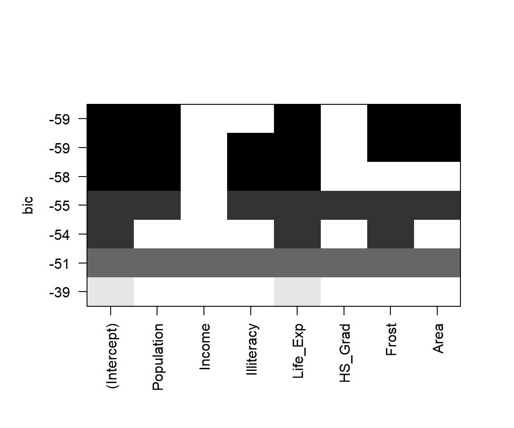
그림 1.7: BIC에 의한 비교 결과
그림 1.7의 X축에는 설명변수가 표시되어 있고, Y축에는 비교 대상이 되는 각 모형의 \(BIC\) 의 값이 표시되어 있다. 즉, 그래프의 각 행은 비교 대상이 되는 각 모형을 나타내는 것이며, X축에 표시된 설명변수가 해당 모형에 포함이 된 것이면 직사각형에 색이 채워진다.
위에서 첫 번째 모형이 \(BIC\) 의 값이 가장 작은 모형이며, 변수 Population, Life_Exp, Frost, Area가 포함된 모형이다.
수정결정계수를 평가 측도로 변경하여 변수선택을 진행해 보자. 변수 Population, Illiteracy, Life_Exp, Frost, Area가 선택되었다.
> plot(fits, scale = "adjr2")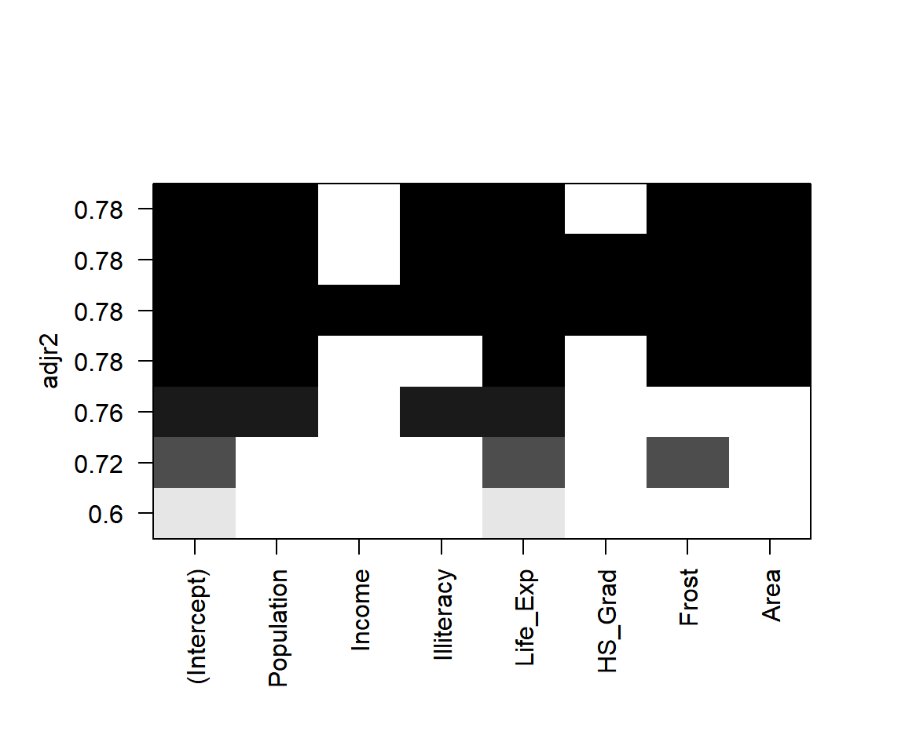
그림 1.8: 수정결정계수에 의한 비교 결과
Stepwise selection 방법을 함수 MASS::stepAIC()로 진행해 보자. 먼저 모든 설명변수가 포함된 모형과 절편만 있는 모형에 대한 lm 객체를 생성시키자.
> fit_full <- lm(Murder ~ ., states)
> fit_null <- lm(Murder ~ 1, states)AIC에 의한 forward selection으로 변수선택을 진행해 보자. fit_null로 시작하고 scope의 upper가 fit_full로 지정하였기 때문에 hybrid forward selection이 수행된다. 변수 Life_Exp, Frost, Population, Area, Illiteracy가 선택되었다.
> library(MASS)
> stepAIC(fit_null,
+ scope = list(lower = fit_null, upper = fit_full),
+ trace = FALSE)
Call:
lm(formula = Murder ~ Life_Exp + Frost + Population + Area +
Illiteracy, data = states)
Coefficients:
(Intercept) Life_Exp Frost Population Area Illiteracy
1.202e+02 -1.608e+00 -1.373e-02 1.780e-04 6.804e-06 1.173e+00 AIC에 의한 backward elimination으로 변수선택을 진행해 보자. Backward elimination은 full model을 시작 모형으로 지정하면 실행된다. AIC에 의한 forward selection과 같은 결과를 보이고 있다.
> stepAIC(fit_full, direction = "both", trace = FALSE)
Call:
lm(formula = Murder ~ Population + Illiteracy + Life_Exp + Frost +
Area, data = states)
Coefficients:
(Intercept) Population Illiteracy Life_Exp Frost Area
1.202e+02 1.780e-04 1.173e+00 -1.608e+00 -1.373e-02 6.804e-06 BIC에 의한 forward selection으로 변수선택을 진행해 보자. 변수 Illiteracy가 제외되어 AIC에 의한 방법과는 다른 결과가 나왔다.
> stepAIC(fit_null,
+ scope = list(lower = fit_null, upper = fit_full),
+ k = log(nrow(states)),
+ trace = FALSE)
Call:
lm(formula = Murder ~ Life_Exp + Frost + Population + Area, data = states)
Coefficients:
(Intercept) Life_Exp Frost Population Area
1.387e+02 -1.837e+00 -2.204e-02 1.581e-04 7.387e-06 BIC에 의한 backward elimination으로 변수선택을 진행해 보자. BIC에 의한 forward selection과 같은 결과를 보이고 있다.
> stepAIC(fit_full, direction = "both",
+ k = log(nrow(states)), trace = FALSE)
Call:
lm(formula = Murder ~ Population + Life_Exp + Frost + Area, data = states)
Coefficients:
(Intercept) Population Life_Exp Frost Area
1.387e+02 1.581e-04 -1.837e+00 -2.204e-02 7.387e-06 1.3.2 Shrinkage 방법
Shrinkage 방법이란 모든 설명변수를 포함한 full model을 대상으로 회귀계수의 추정 결과에 제약 조건을 부과함으로써 회귀계수의 추정값을 0으로 수축시키는 방법이다. 회귀계수의 추정값이 정확하게 0으로 수축되면, 해당 변수는 실질적으로 모형에서 제외된 것이기 때문에 변수선택과 동일한 효과를 볼 수 있다.
가장 많이 사용되는 shrinkage 방법에는 ridge regression과 lasso가 있다. 회귀계수 \(\beta_{0}, \beta_{1}, \ldots, \beta_{k}\) 를 최소제곱추정법으로 추정하기 위해서는 다음의 \(RSS\) 를 최소화시켜야 한다.
\[\begin{equation} RSS = \sum_{i=1}^{n} \left(y_{i}-\beta_{0}-\sum_{j=1}^{k}\beta_{j}x_{j} \right)^{2} \end{equation}\]Ridge regression의 회귀계수 추정량 \(\hat{\beta}^{R}\) 의 추정 결과는 다음의 변량을 최소화시켜야 한다.
\[\begin{equation} RSS + \lambda \sum_{j=1}^{k}\beta_{j}^{2} \end{equation}\]단, \(\lambda\) 는 회귀계수의 수축 정도를 조절하는 모수로써 클수록 강하게 수축시키는 역할을 한다. Ridge regression의 회귀계수 추정값은 영향력이 작은 변수의 경우에는 상대적으로 0에 더 근접한 값으로 수축이 되지만, 정확하게 0의 값을 갖는 것은 아니다. 따라서 변수선택의 목적으로는 사용할 수 없는 방법이 된다.
Lasso(Least Absolute Shrinkage and Selection Operator)는 ridge regression과는 다르게 영향력이 작은 변수의 회귀계수를 0으로 만들 수 있기 때문에 변수선택의 효과가 있는 방법이 된다. Lasso의 회귀계수 추정량 \(\hat{\beta}^{L}\)의 추정 결과는 다음의 변량을 최소화시켜야 한다.
\[\begin{equation} RSS + \lambda \sum_{j=1}^{k}|\beta_{j}| \end{equation}\]\(\lambda\) 는 ridge regression과 같은 역할을 하는 모수이다.
\(\bullet\) Lasso 모형 적합을 위한 함수
Lasso는 패키지 glmnet의 함수를 사용해서 적합할 수 있다. 기본적인 적합 함수는 glmnet(x, y)가 되는데, x는 설명변수의 행렬이고, y는 반응변수의 벡터를 지정해야 한다. 최적 lasso 모형을 적합하기 위해서는 최적 \(\lambda\) 값을 선택해서 사용해야 한다. 함수 cv.glmnet(x, y)는 cross-validation으로 최적 \(\lambda\) 값을 추정해 준다.
예제로 앞절에서 사용한 states 자료를 대상으로 lasso 모형을 적합시켜보자. 먼저 설명변수로 이루어진 행렬과 반응변수의 벡터를 생성해 보자.
> X <- model.matrix(Murder ~ ., states)[,-1]
> Y <- states$Murder설명변수의 행렬은 함수 cbind()로 만들 수 있지만, 변수으 개수가 많은 경우에는 불편한 방법이 된다. 함수 model.matrix()는 회귀모형의 design matrix를 생성하는 기능이 있는 함수로써, model.matrix(formula, data)의 형태처럼 lm()과 동일한 방식으로 사용할 수 있다. Design matrix의 첫 번째 열은 모두 1이기 때문에 설명변수의 행렬을 생성하기 위해서는 제외해야 한다.
Lasso 모형을 함수 glmnet()으로 적합하고, 회귀계수 추정값의 변화 그래프를 함수 plot()으로 작성해 보자.
> library(glmnet)
> fit_L <- glmnet(X, Y)> plot(fit_L)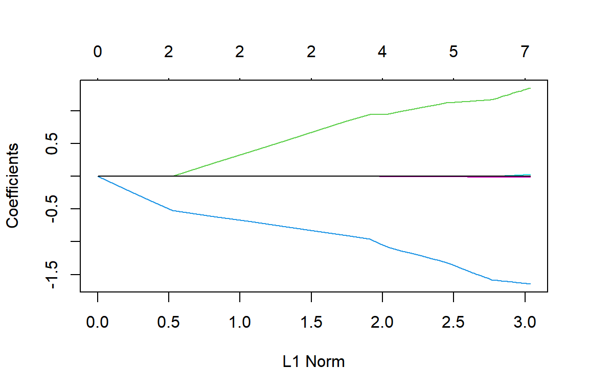
그림 1.9: lambda의 변화에 따른 lasso 회귀계수 추정값의 변화
그림 1.9은 X축에 표시된 L1 Norm인 \(\sum_{j=1}^{k}|\beta_{j}|\) 의 값 변화에 따른 회귀계수 추정결과의 변화를 선으로 나타낸 그래프이다. L1 Norm의 값이 커진다는 것은 \(\lambda\) 의 값이 작아진다는 것을 의미하는 것이며, \(\lambda\) 의 값이 작아지면 회귀계수의 추정값에 대한 수축 강도가 감소하기 때문에 추정값이 커지게 된다. 그래프 위쪽의 눈금은 0이 아닌 회귀계수의 개수를 표시하는 것이다.
최적 \(\lambda\) 의 값을 함수 cv.glmnet()으로 추정해 보자.
> set.seed(123)
> cvfit_L <- cv.glmnet(X, Y)
> cvfit_L
Call: cv.glmnet(x = X, y = Y)
Measure: Mean-Squared Error
Lambda Index Measure SE Nonzero
min 0.1325 34 3.593 0.5818 5
1se 0.4439 21 4.123 0.7045 510-fold CV로 mean squared error를 최소화시키는 \(\lambda\) 값을 구하는 함수이다. min에 해당하는 Lambda는 CV MSE를 최소화시키는 \(\lambda\) 값이며, 이 경우 0이 아닌 회귀계수는 5개가 되었다. 1se에 해당하는 Lambda는 최소 CV MSE의 \(\pm ~1 \cdot SE\) 범위 안에서의 최대 \(\lambda\) 값이 된다. 예측 오차가 최소 CV MSE와는 큰 차이가 없으면서도 가능한 더 많은 회귀계수를 0으로 수축시킬 수 있는 모형에 해당하는 \(\lambda\) 값이 된다.
CV 결과를 그래프로 확인해 보자.
> plot(cvfit_L)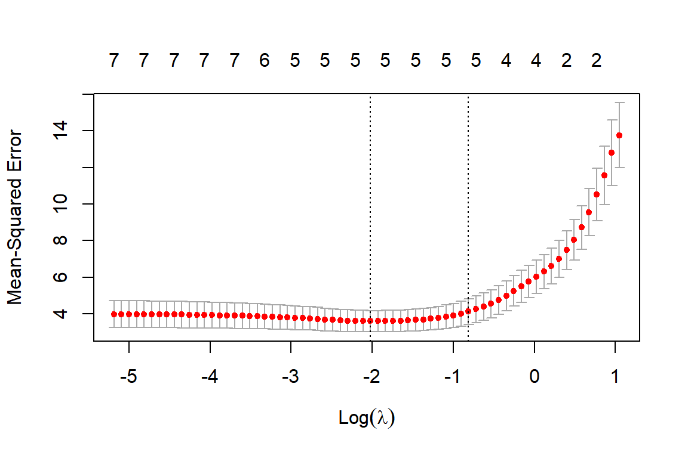
그림 1.10: lambda의 변화에 따른 CV MSE의 변화
왼쪽에서 첫 번째 수직점선이 최소 CV MSE에 해당하는 \(\lambda\) (lambda.min)이고, 두 번째 수직점선이 1SE에 해당하는 \(\lambda\) (lambda.1se)를 표시하고 있다.
최적 \(\lambda\) 값으로 lasso 모형의 회귀계수 추정 결과는 함수 coef()로 확인할 수 있다. s에는 \(\lambda\) 값을 지정하거나, "lambda.1se" 또는 "lambda.min"을 지정할 수 있다. 디폴트는 "lambda.1se"이다.
> coef(cvfit_L)
8 x 1 sparse Matrix of class "dgCMatrix"
s1
(Intercept) 1.047138e+02
Population 1.049949e-04
Income .
Illiteracy 1.134404e+00
Life_Exp -1.387603e+00
HS_Grad .
Frost -8.497434e-03
Area 1.839126e-06> coef(cvfit_L, s = "lambda.min")
8 x 1 sparse Matrix of class "dgCMatrix"
s1
(Intercept) 1.155400e+02
Population 1.562245e-04
Income .
Illiteracy 1.162400e+00
Life_Exp -1.541952e+00
HS_Grad .
Frost -1.216227e-02
Area 5.322211e-06Lasso 모형의 회귀계수 추정 결과는 최소제곱추정에 의한 추정 결과와는 다르며, 회귀계수 추정에 대한 SE도 계산되지 않는다.
적합된 lasso 모형을 활용하는 방식은 두 가지가 될 수 있다. 회귀계수의 추정 결과가 0인 변수는 다중회귀모형에서 제외하는 변수선택의 일환으로 활용하거나, lasso 모형을 그대로 예측모형으로 활용하는 것이다.
1.4 회귀진단
지금까지 우리는 변수선택 과정을 통해 최적모형을 찾는 방법을 살펴보았다. 이제 선택된 모형을 이용하여 반응변수에 대한 예측을 실시하거나 혹은 변수들에 대한 추론 등을 실시할 수 있게 되었다. 그러나 만일 선택된 모형이 회귀모형의 가정을 전혀 만족시키지 못하고 있다면 이러한 예측이나 추론 등은 통계적 신빙성이 전혀 없는 결과가 될 수도 있다. 따라서 선택된 회귀모형이 가정사항을 만족하고 있는지를 확인하는 과정이 필요한데, 이것을 회귀진단이라고 한다. 회귀진단은 일반적으로 회귀모형에 대한 진단과 관찰값에 대한 진단으로 구분해서 진행된다.
1.4.1 회귀모형의 가정 만족 여부 확인
다중회귀모형 \(y_{i}=\beta_{0}+\beta_{1}x_{1i}+\cdots+\beta_{ki}+\varepsilon_{i}\), \(i=1,\ldots,n\)에 대한 가정은 다음과 같다.
오차항 \(\varepsilon_{1}, \varepsilon_{2}, \cdots, \varepsilon_{n}\) 의 평균은 0, 분산은 \(\sigma^{2}\)
오차항 \(\varepsilon_{1}, \varepsilon_{2}, \cdots, \varepsilon_{n}\) 의 분포는 정규분포
오차항 \(\varepsilon_{1}, \varepsilon_{2}, \cdots, \varepsilon_{n}\) 은 서로 독립
반응변수와 설명변수의 관계는 선형
오차항에 대한 가정 사항은 잔차 (\(e_{i}=y_{i}-\hat{y}_{i}\))를 이용하여 확인하게 되는데, 그것은 오차항이 관측할 수 없는 대상이기 때문이다.
1.3절에서 예제 자료인 데이터 프레임 states에 대한 변수선택을 시행하였는데,
선택된 모형에 대한 가정만족 여부를 확인해 보자.
> library(tidyverse)
> states <- as_tibble(state.x77) %>%
+ rename(Life_Exp = 'Life Exp', HS_Grad = 'HS Grad')> fit_full <- lm(Murder ~ ., states)
> fit_s <- MASS::stepAIC(fit_full, direction = "both",
+ trace = FALSE)추정된 회귀모형의 가정 만족 여부를 확인하는 가장 기본적인 절차는 함수 lm()으로 생성된 객체를 함수 plot()에 적용시키는 것이다.
여섯 개의 그래프가 작성되지만 디폴트로 네 개의 그래프가 차례로 그려진다.
하나의 Plots 창에 네 개의 그래프를 한꺼번에 그리기 위해서는 par(mfrow = c(2,2))를 먼저 실행시켜서 그래프 영역을 두 개의 행과 두 개의 열로 분할해야 한다.
회귀모형 fit_s의 가정의 만족 여부를 함수 plot()으로 확인해보자.
> par(mfrow = c(2, 2))
> plot(fit_s)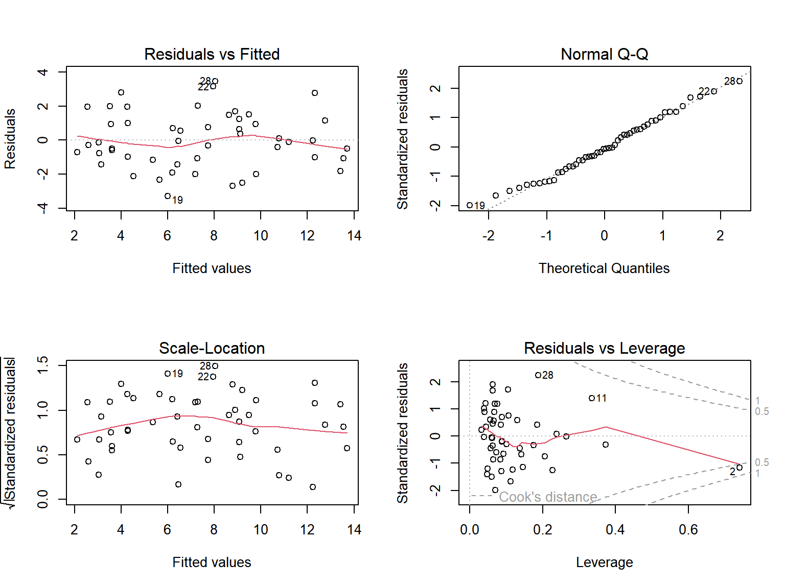
그림 1.11: 함수 plot()에 의한 회귀진단
그림 1.11의 각 그래프에 3개의 숫자가 표시되어 있는 것을 볼 수 있는데, 이것은 각 그래프에서 가장 극단적인 세 점의 행 번호이다.
원래는 자료로 사용된 데이터 프레임의 행 이름이 표시되는 것인데, 데이터 프레임 states의 경우에는 tibble이어서 행 이름이 없기 때문에 행 번호가 표시된 것이다.
행 이름을 표시하기 위해서는 states를 생성할 때 as_tibble()이 아닌 as.data.frame()을 사용하거나,
함수 plot()의 옵션 labels.id에 행렬 state.x77의 행 이름을 지정하면 된다.
또한 점 모양도 조금 더 명확하게 인식될 수 있는 것으로 바꾸어 보자.
Base 그래픽스 함수인 plot()의 경우에 점 모양은 입력 요소 pch로 조절한다.
> par(mfrow = c(2, 2))
> plot(fit_s, pch = 20, labels.id = rownames(state.x77))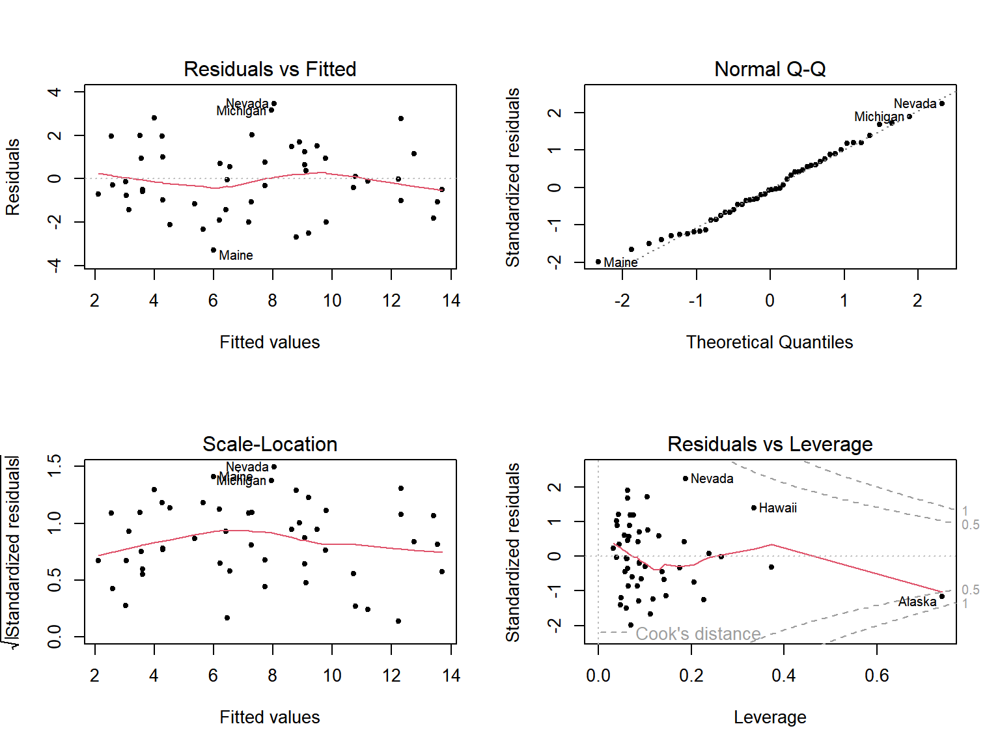
그림 1.12: 함수 plot()에 의한 회귀진단
그림 1.12의 왼쪽 위 패널에 있는 Residuals vs Fitted라는 제목의 그래프는 일반적으로 가장 많이 사용되는 잔차 산점도 그래프로서, 잔차 \(e_{i}\) 와 \(\hat{y}_{i}\) 의 산점도이다.
오른쪽 위 패널에 있는 Normal Q-Q라는 제목의 그래프는 표준화잔차 \(r_{i}\) 의 정규 분위수-분위수 그래프이다.
왼쪽 아래 패널에 있는 Scale-Location이라는 제목의 그래프는 \(\sqrt{|r_{i}|}\) 와 \(\hat{y}_{i}\) 의 산점도로서 동일 분산 가정의 만족 여부를 확인하는 그래프이다.
마지막으로 오른쪽 아래 패널에 있는 Residuals vs Leverage라는 제목의 그래프는 관찰값의 진단에 사용되는 그래프로, 자세한 설명은 1.4.2절에서 하겠다.
Normal Q-Q 그래프와 Scale-Location 그래프에서 사용된 표준화 잔차는 일반 잔차의 퍼짐 정도를 조정한 잔차로써 다음과 같이 정의된다.
\[\begin{equation} r_{i} = \frac{e_{i}}{RSE \sqrt{1-h_{i}}} \end{equation}\]
표준화 잔차를 정의하는데 사용된 \(h_{i}\)는 leverage라고 불리는 통계량으로써, 설명변수들의 \(k\) 차원 공간에서 설명변수의 \(i\) 번째 관찰값이 자료의 중심으로부터 떨어져 있는 거리를 표현하는 것으로 볼 수 있다. Leverage 값이 큰 관찰값은 회귀계수의 추정 결과에 큰 영향을 줄 가능성이 높다고 할 수 있다. 그림 1.13는 leverage가 큰 관찰값이 회귀계수 추정 결과에 어떻게 영향을 줄 수 있는지를 보여주는 모의자료를 이용한 예가 된다. 두 그래프에서 빨간 점은 leverage가 높은 관찰값인데, 실선은 빨간 점을 포함하고 추정한 회귀직선이고, 점선은 빨간 점을 제외한 상테에서 추정한 회귀직선이다. 첫 번째 그래프에서만 큰 영향력을 확인할 수 있다.
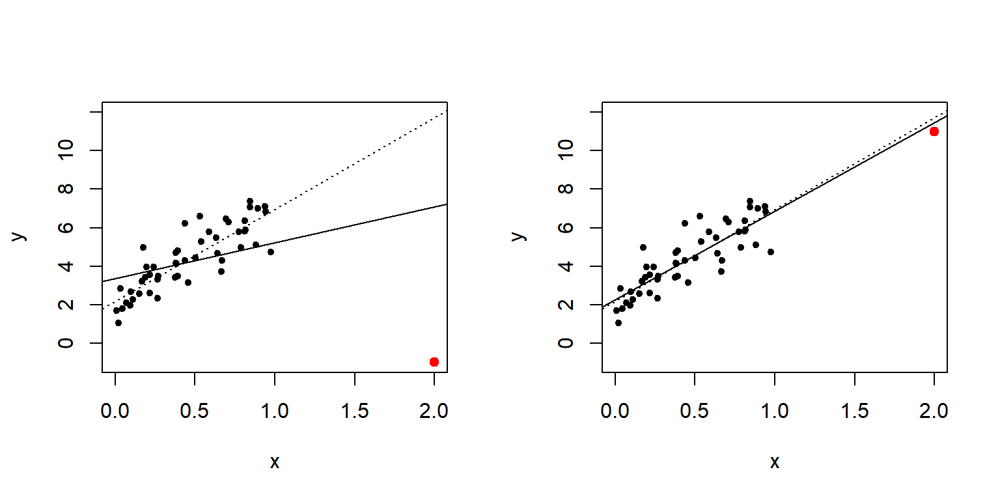
그림 1.13: leverage가 높은 관찰값의 영향력을 보여주는 모의자료
이제 그림 1.12의 그래프를 중심으로 회귀모형 fit_s의 가정 만족 여부를 확인해 보자.
\(\bullet\) 오차항의 동일분산 가정
동일분산 가정의 만족 여부를 확인하는 기본적인 방법은 함수 plot()으로 생성되는 잔차 \(e_{i}\) 와 \(\hat{y}_{i}\) 의 산점도와 \(\sqrt{|r_{i}|}\) 와 \(\hat{y}_{i}\) 의 산점도를 확인하는 것이다.
모형 fit_s에 대한 두 종류의 잔차 산점도를 다시 살펴보자.
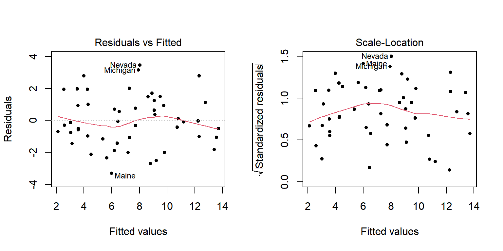
그림 1.14: 동일분산 가정 확인을 위한 잔차 산점도
그림 1.14의 첫 번째 그래프에서는 Y축이 0인 수평선을 중심으로 점들이 거의 일정한 폭을 유지하며 분포하고 있는지 확인해야 한다. 그림 1.14의 두 번째 그래프에서는 점들이 전체적으로 증가하거나 감소하는 패턴이 있는지 확인해야 한다. 그래프에 추가된 빨간 곡선을 참조하여 판단하는 것이 좋은데, 이것은 로버스트 국소다항회귀에 의해 추정된 비모수 회귀곡선이다. 극단값에 영향을 덜 받으면서 두 변수의 관계를 가장 잘 나타내는 곡선이라고 하겠다. 그림 1.14에서는 분산이 일정하지 않다는 증거를 확인하기 어려워 보인다.
\(\bullet\) 오차항의 정규분포 가정
회귀분석에서 이루어지는 검정 및 신뢰구간은 오차항이 정규분포를 한다는 가정에 근거를 두고 이루어진다. 그러나 오차항의 분포가 정규분포의 형태에서 약간 벗어나는 것은 큰 문제를 유발하지 않으며, 표본 크기가 커지면 중심극한정리를 적용할 수 있어서 비정규성은 큰 문제가 되지 않는다. 그러나 오차항의 분포가 Cauchy 분포와 같이 꼬리가 긴 형태의 분포임이 확인된다면 최소제곱법에 의한 회귀계수의 추정보다는 로버스트 선형회귀를 이용하는 것이 더 효과적일 것이다.
정규성의 확인에 사용되는 그래프로는 함수 plot()에서 생성되는 표준화잔차에 대한 정규 분위수-분위수 그래프가 있다.
회귀모형 fit_s의 정규성 가정을 확인해보자.
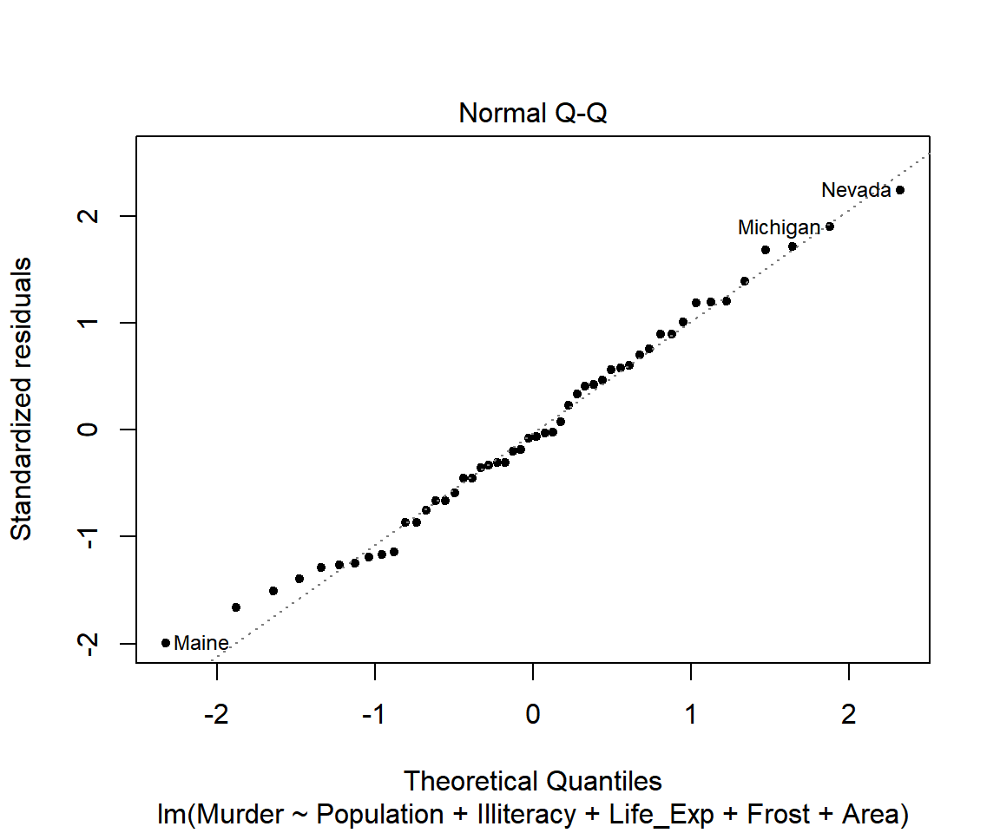
그림 1.15: 정규분포 가정 확인을 위한 그래프
잔차의 정규 분위수-분위수 그래프에서는 크기순으로 재배열한 잔차가 표본 분위수가 되는데, 표본 분위수 사이의 간격 패턴이 정규분포 이론 분위수 사이의 간격 패턴과 유사하면 점들이 기준선 위에 분포하게 된다. 정규분포 가정에는 문제가 없는 것으로 보인다.
\(\bullet\) 오차항의 독립성 가정
수집된 자료가 시간적 혹은 공간적으로 서로 연관되어 있는 경우에는 오차항의 독립성 가정이 만족되지 않을 수 있다.
시간에 흐름에 따라 관측된 시계열 자료나 공간에 따라 관측된 공간 자료를 대상으로 회귀분석을 하는 경우에는 반드시 확인해야 할 가정이 된다.
독립성 가정은 여러 행태로 위반될 수 있는데,
우선 \(\varepsilon_{i}\) 가 \(\varepsilon_{i-1}\) 와 서로 연관되어 있는지 여부,
즉 1차 자기상관관계만을 확인하려면 Durbin-Watson 검정을 실시하면 된다.
Durbin-Watson 검정은 패키지 car의 함수 durbinWatsonTest()로 할 수 있으며,
귀무가설은 오차항의 1차 자기상관계수가 0이라는 것이다.
Durbin-Watson 검정에서 귀무가설을 기각하지 못했다고 해서 오차항이 독립이라고 바로 결론을 내릴 수는 없는데, 그것은 일반적인 형태의 위반 여부를 확인해야 하기 때문이다.
일반적인 형태의 독립성 위반이란 오차항이 자기회귀이동평균모형, 즉 ARMA(p,q)모형인지 여부를 확인하는 것이다.
이것을 위한 첫 번째 단계는 오차항의 1차 자기상관계수부터 K차 자기상관계수가 모두 0이라는 귀무가설을 검정하는 Breusch-Godfrey 검정을 실시하는 것이다.
이 작업은 패키지 forecast의 함수 checkresiduals()로 할 수 있다.
데이터 프레임 states는 시간적 혹은 공간적으로 연관을 갖기 어려운 방식으로 수집되어 있기 때문에 오차항의 독립성 가정에는 큰 문제가 없는 경우라고 할 수 있다.
대신 살펴볼 자료는 패키지 carData에 있는 데이터 프레임 Hartnagel이다.
이 데이터는 1931년부터 1968년까지의 캐나다 범죄율에 관한 연도별 자료이다.
여성 범죄율(fconvict)을 반응변수로 하고 출산율(tfr)과 여성 고용률(partic)을 설명변수로 하는 회귀모형 fit_H을 적합해 보자.
> data(Hartnagel, package = "carData")
> fit_H <- lm(fconvict ~ tfr + partic, Hartnagel)> summary(fit_H)
Call:
lm(formula = fconvict ~ tfr + partic, data = Hartnagel)
Residuals:
Min 1Q Median 3Q Max
-32.944 -12.771 -3.219 5.308 50.514
Coefficients:
Estimate Std. Error t value Pr(>|t|)
(Intercept) 207.092195 36.432869 5.684 2.01e-06 ***
tfr -0.052305 0.006995 -7.478 9.34e-09 ***
partic 0.182202 0.090496 2.013 0.0518 .
---
Signif. codes: 0 '***' 0.001 '**' 0.01 '*' 0.05 '.' 0.1 ' ' 1
Residual standard error: 19.6 on 35 degrees of freedom
Multiple R-squared: 0.6622, Adjusted R-squared: 0.6429
F-statistic: 34.3 on 2 and 35 DF, p-value: 5.654e-09모형 fit_H에 대한 Durbin-Watson 검정을 실시해 보자.
> car::durbinWatsonTest(fit_H)
lag Autocorrelation D-W Statistic p-value
1 0.714117 0.5453534 0
Alternative hypothesis: rho != 01차 자기상관계수는 0.714로 추정되었고, 검정 결과 p-값은 0으로 계산되어 1차 자기상관계수가 0이라는 귀무가설을 기각할 수 있다. 이어서 오차항의 1차 자기상관계수부터 K차 자기상관계수가 모두 0이라는 가설을 검정해 보자.
> forecast::checkresiduals(fit_H)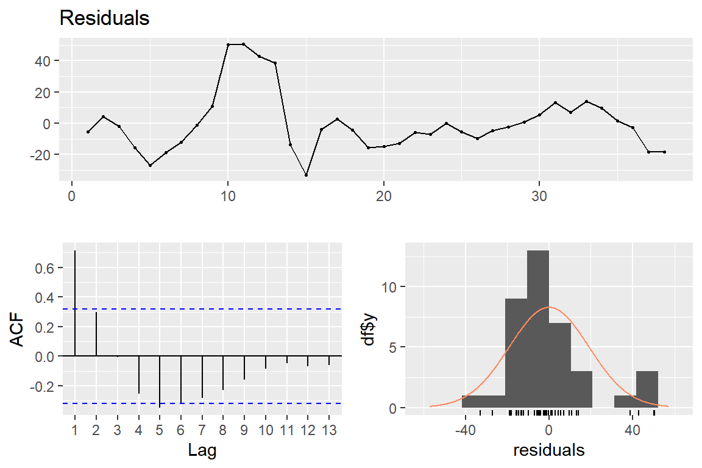
그림 1.16: 함수 checkresiduals()로 작성된 그래프
Breusch-Godfrey test for serial correlation of order up to 8
data: Residuals
LM test = 25.188, df = 8, p-value = 0.001444매우 작은 p-값이 계산되어서 오차항의 1차 자기상관계수부터 8차 자기상관계수가 모두 0이라는 귀무가설을 기각할 수 있다.
함수 checkresiduals()는 잔차에 대한 몇 가지 그래프도 함께 작성한다.
그림 1.16의 위 패널에 작성된 것은 잔차의 시계열 그래프이고,
왼쪽 아래 패널에는 각 시차(lag)별 잔차의 표본 ACF가 작성되어 있으며 오른쪽 아래 패널에는 잔차의 히스토그램이 작성되어 있다.
독립성 가정이 만족되지 않는 경우에 사용할 수 있는 대안으로는 잔차를 대상으로 적절한 ARMA(p,q)모형을 적합시켜 회귀모형에 포함시키는 것을 생각할 수 있다.
\(\bullet\) 선형관계 가정
단순회귀모형의 경우 반응변수와 설명변수의 선형관계는 두 변수의 산점도로 충분히 확인할 수 있다. 그러나 다중회귀모형의 경우에는 \(X_{i}\) 와 \(Y\) 의 산점도 혹은 \(X_{i}\) 와 잔차 \(e\) 산점도가 큰 의미를 갖지 못하게 되는데, 이것은 회귀모형에 포함된 다른 변수의 영향력을 확인할 수 없기 때문이다. 이러한 경우 부분잔차(partial residual)가 매우 유용하게 사용될 수 있다. 변수 \(X_{i}\) 의 부분잔차란 반응변수 \(Y\) 에서 모형에 포함된 다른 설명변수의 영향력이 제거된 잔차를 의미하는 것으로써, \(Y-\sum_{j \ne i}\hat{\beta}_{j}X_{j}\) 로 정의할 수 있다. 그런데 \(Y=\hat{Y} + e\) 가 되기 때문에, 부분잔차는 \(\hat{Y}+e-\sum_{j \ne i}\hat{\beta}_{j}X_{j}\) 로 표현되고, 이어서 \(e + \hat{\beta}_{i}X_{i}\) 로 정리할 수 있다. 따라서 다중선형회귀모형에서 \(X_{i}\) 와 \(Y\) 의 선형관계는 \(X_{i}\) 와 \(e + \hat{\beta}_{i}X_{i}\) 의 산점도로 확인할 수 있다.
데이터 프레임 states의 회귀모형 fit_s에 포함된 설명변수와 반응변수의 선형관계를 부분잔차 산점도를 작성하여 확인해 보자.
부분 잔차 산점도는 패키지 car의 crPlots()로 작성할 수 있는데, 이 그래프는 Component + Residual Plots라고도 불린다.
> car::crPlots(fit_s)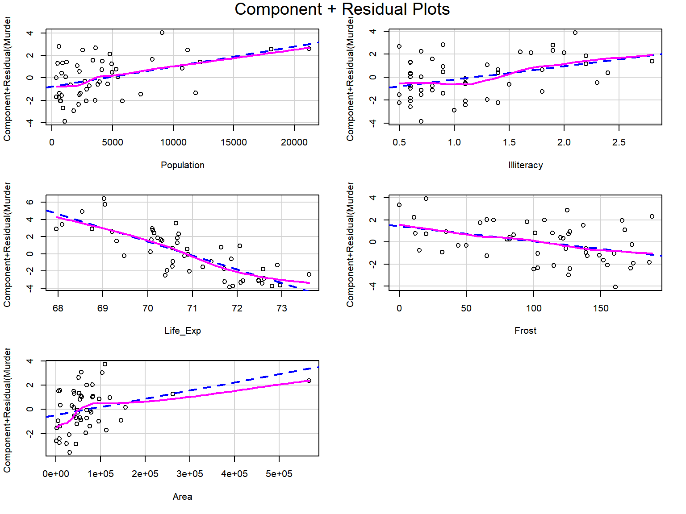
그림 1.17: 선형 가정 확인을 위한 부분잔차 산점도
각 변수의 부분잔차 산점도에는 두 변수의 회귀직선을 나타내는 파란 색의 대시(dashed line)와 국소다항회귀곡선을 나타내는 마젠타(magenta) 색의 실선이 추가되어 있다.
국소다항회귀곡선이 회귀직선과 큰 차이를 보인다면 비선형 관계를 의심할 수 있을 것이다.
그런 경우에는 해당 변수의 제곱항을 모형에 포함시키거나 또는 해당 변수의 적절한 변환이 이루어져야 할 것이다.
회귀모형 fit_s에서는 선형관계에 큰 문제가 없는 것으로 확인된다.
\(\bullet\) 다중공선성
다중공선성은 회귀모형의 가정과 직접적인 연관이 있는 것이 아니지만 회귀모형의 추정결과를 해석하는 과정에 큰 영향을 미칠 수 있는 문제가 된다. 즉, 설명변수들 사이에 강한 선형관계가 존재하는 다중공선성의 문제가 생기면 회귀계수 추정량의 분산이 크게 증가하게 되어 결과적으로 회귀계수의 신뢰구간 추정 및 검정에 큰 영향을 미치게 된다.
다중공선성은 분산팽창계수(variance inflation factor)를 계산해 보면 확인할 수 있다. 변수 \(X_{j}\) 의 분산팽창계수는 \(1/(1-R_{j}^{2})\) 로 계산되는데, 여기에서 \(R_{j}^{2}\) 는 \(X_{j}\) 를 종속변수로 하고 나머지 설명변수를 독립변수로 하는 회귀모형의 결정계수이다. 따라서 분산팽창계수의 값이 10 이상이 된다는 것은 \(R_{j}^{2}\) 의 값이 0.9 이상이라는 것이므로 강한 다중공선성의 존재를 의미한다.
분산팽창계수의 계산은 패키지 car의 함수 vif()로 할 수 있다.
모형 fit_s의 다중공선성 존재 여부를 확인해 보자.
> car::vif(fit_s)
Population Illiteracy Life_Exp Frost Area
1.171232 2.871577 1.625921 2.262943 1.036358 회귀모형 fit_s에 있는 다섯 설명변수의 분산팽창계수가 모두 큰 값이 아닌 것으로 계산되었고, 따라서 다중공선성의 문제는 없는 것으로 보인다.
1.4.2 특이한 관찰값 탐지
회귀모형의 가정사항 만족 여부를 확인하는 것과 더불어 특이한 관찰값의 존재유무를 확인하는 것도 중요한 회귀진단 항목이 된다. 특이한 관찰값이란 회귀계수의 추정에 과도하게 큰 영향을 미치는 관찰값이나, 추정된 회귀모형으로는 설명이 잘 안 되는 이상값을 의미한다.
영향력이 큰 관찰값을 발견하는 데 필요한 통계량으로는 DFBETAS, DFFITS, Covariance ratio, Cook’s distance와 Leverage 등이 있으며, 이러한 통계량을 근거로 하여 특이한 관찰값 탐지에 사용되는 많은 R 함수가 있다.
그 중 패키지 car의 함수 influencePlot()에 대해 살펴보도록 하자.
예제로써 1.4.1절에서 살펴본 states를 대상으로 적합된 회귀모형 fit_s를 대상으로 특이한 관찰값을 탐지해 보자.
그런데 함수 influencePlot()가 작성하는 그래프에는 가장 극단적인 관찰값의 라벨이 표시되는데,
회귀분석에 사용된 데이터 프레임의 행 이름이 관찰값의 라벨이 된다.
그런데 1.4.1절에서 적합된 회귀모형 fit_s에 사용된 데이터 프레임 states는 tibble이기 때문에 행 이름이 없어서 행 번호가 라벨로 표시가 되며,
따라서 그래프에서 특이한 관찰값을 인식하는 데 불편하게 된다.
이 절에서는 states를 전통적 데이터 프레임으로 전환하여 다시 모형 fit_s를 적합하고, 이어서 특이한 관찰값 탐지 함수에 적용하도록 하겠다.
> library(tidyverse)
> states <- as.data.frame(state.x77) %>%
+ rename(Life_Exp = 'Life Exp', HS_Grad = 'HS Grad') > fit_full <- lm(Murder ~ ., states)
> fit_s <- MASS::stepAIC(fit_full, direction = "both",
+ trace = FALSE)이상값이란 추정된 회귀모형으로는 설명이 잘 안 되는 관찰값이라고 할 수 있는데, 대부분의 경우 이상값은 큰 잔차를 갖게 된다.
그러나 만일 이상값에 해당되는 관찰값이 영향력도 크다면 그림 1.13의 첫 번째 그래프에서 볼 수 있듯이 회귀계수의 추정을 왜곡시켜 그렇게 크지 않은 잔차를 갖게 될 수도 있다.
따라서 이상값을 판단하고자 한다면 일반적인 잔차보다는 스튜던트화 잔차를 이용하는 것이 더 효과적이라고 하겠다.
함수 influencePlot()은 스튜던트화 잔차와 leverage, 그리고 Cook’s distance를 하나의 그래프에서 같이 보여줌으로써 특이한 관찰값을 분류하는 데 큰 도움이 되는 함수이다.
Cook’s distance는 \(i\) 번째 관찰값을 포함한 상태에서 추정한 회귀계수 벡터 \(\hat{\boldsymbol{\beta}}\) 과 \(i\) 번째 관찰값을 제외하고 추정한 회귀계수 벡터 \(\hat{\boldsymbol{\beta}}_{(i)}\) 의 통합된 차이를 보여주는 통계량이다.
\[\begin{equation} COOKD = \frac{\left(\hat{\boldsymbol{\beta}}-\hat{\boldsymbol{\beta}}_{(i)} \right)^{T}\mathbf{X}^{T}\mathbf{X}\left(\hat{\boldsymbol{\beta}}-\hat{\boldsymbol{\beta}}_{(i)} \right) }{(k+1)RSE} \end{equation}\]
\(\hat{y}_{(i)}\) 를 \(i\) 번째 관찰값을 제외한 나머지 \((n-1)\) 개의 자료로 추정된 회귀모형으로 제외된 \(y_{i}\) 를 예측한 결과라고 하면, 스튜던트화 잔차 \(t_{i}\) 는 \(y_{i}\) 와 \(\hat{y}_{(i)}\) 의 표준화된 차이라고 할 수 있다.
\[\begin{equation} t_{i} = \frac{y_{i}-\hat{y}_{(i)}}{SE\left(y_{i}-\hat{y}_{(i)}\right)} \end{equation}\]
스튜던트화 잔차의 값이 크다는 것은 해당 관찰값이 이상값으로 분류될 가능성이 높다는 의미가 된다.
이제 회귀모형 fit_s를 함수 influencePlot()에 입력해서 결과를 확인해 보자.
> car::influencePlot(fit_s)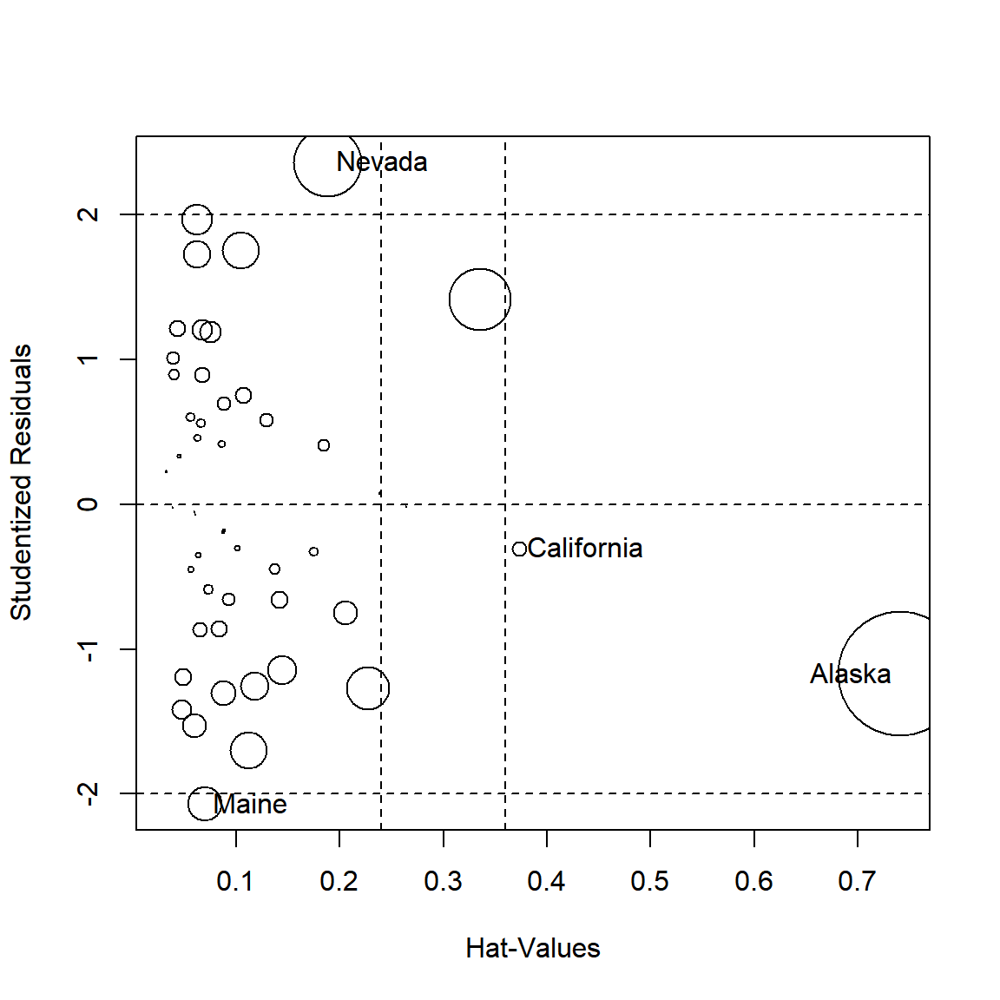
그림 1.18: 함수 influencePlot()에 의한 회귀진단 그래프
StudRes Hat CookD
Alaska -1.1711577 0.74103486 0.648670758
California -0.3054018 0.37300431 0.009442443
Maine -2.0697239 0.06978331 0.049840421
Nevada 2.3610559 0.18825163 0.195174098함수 influencePlot()으로 작성된 그래프는 각 관찰값의 leverage를 X축 좌표로, 스튜던트화 잔차를 Y축 좌표로 하는 산점도이며, 점의 크기는 Cook’s distance에 비례하여 결정된다.
관찰값들의 평균 leverage의 두 배와 세 배가 되는 지점에 수직 점선이 추가되며,
스튜던트화 잔차가 \(\pm 2\) 인 지점에 수평 점선이 추가된다.
또한 X축과 Y축에서 가장 극단적인 두 점에는 라벨이 표시된다.
그래프에서 확인할 수 있는 것으로는 우선 Alaska의 경우에 leverage 값과 Cook’s distance의 값이 제일 커서 영향력이 큰 관찰값이라 할 수 있지만, 스튜던트화 잔차는 비교적 크지 않다는 점이다.
Nevada의 경우에는 Cook’s distance와 스튜던트화 잔차가 비교적 크지만, leverage는 작은 값을 갖고 있다. 전체적으로, 회귀모형 fit_s에는 문제가 되는 관찰값이 없다고 할 수 있다.
1.5 예측
변수선택과 모형진단 과정 등을 통해 회귀모형이 완성되면 분석의 마지막 단계인 예측을 실행할 수 있게 된다. 예측은 새롭게 주어진 설명변수의 값 \(\mathbf{x}_{o}=\left(1, x_{1o}, \ldots, x_{ko} \right)^{T}\) 에 대하여 반응변수의 값을 예측하는 것인데, 두 가지 방식으로 구분된다. 하나는 반응변수의 평균값에 대한 예측이고 다른 하나는 반응변수의 개별 관찰값에 대한 예측이다. 예를 들어 주택의 매매 가격(\(Y\) )와 주택의 특성과 관련된 k개의 설명변수 \(X_{1}, \ldots, X_{k}\) 로 이루어진 회귀모형을 추정하였다고 하자. 새롭게 설명변수의 값이 \(\mathbf{x}_{o}\) 로 주어졌을 경우, 반응변수의 평균 값에 대한 예측이란 주택의 특성이 \(\mathbf{x}_{o}\) 에 해당되는 모든 주택의 평균 매매 가격을 예측하는 것이고, 반응변수의 개별 관찰값에 대한 예측이란 주택의 특성이 \(\mathbf{x}_{o}\) 인 어느 특정 주택의 매매 가격을 예측하는 것이다. 두 가지 상황에서 예측 결과는 \(\hat{y}_{o} = \mathbf{x}_{o}^{T} \hat{\boldsymbol{\beta}}\) 으로 동일하지만 예측 오차는 개별 관찰값에 대한 예측의 경우가 더 큰 값을 갖게 된다.
\(\bullet\) 함수 predict()에 의한 예측
반응변수의 예측은 함수 predict()로 할 수 있다.
기본적인 사용법은 predict(object, newdata, interval = c("none", "confidence", "prediction"), level = 0.95)이다.
object는 예측에 사용될 회귀모형의 lm 객체를 의미하며,
newdata는 새롭게 주어지는 설명변수의 값으로 반드시 데이터 프레임으로 입력되어야 한다.
옵션 interval은 예측에 대한 신뢰구간을 계산하는 것으로 반응변수의 평균값에 대한 예측인 경우에는 "confidence", 반응변수의 개별 관찰값에 대한 예측인 경우에는 "prediction"을 선택해야 하며, 디폴트는 "none"이다.
\(\bullet\) 데이터 분리
회귀모형의 예측 결과는 반드시 평가를 받아야 한다. 모형의 예측력을 평가할 수 있는 방법으로 전체 데이터를 training data와 test data로 분리하는 것을 생각할 수 있다. Training data를 대상으로 변수선택 및 진단과정을 거쳐 최종모형을 선택하고, 이어서 선택된 모형을 사용하여 test data를 대상으로 예측을 실시하는 것이다. Test data에는 반응변수의 값이 포함되어 있으므로 예측 오차를 계산할 수 있다.
데이터를 분리하는 작업은 dplyr::slice_sample()로도 할 수 있으나, 패키지 caret의 함수 createDataPartition()을 사용하도록 하겠다.
패키지 caret에는 Machine Learning 작업을 위한 다양한 함수가 마련되어 있다.
패키지에 대한 자세한 소개는 생략하겠으나 Machine Learning 분야에 관심이 있는 사용자는 눈여겨봐야 할 패키지이다.
비록 Machine Learning의 중심이 최근에 출시되고 있는 tidymodels로 점차 옮겨가고 있으나 아직 중요한 역할을 담당하고 있다.
함수 createDataPartition()의 기본적인 사용법은 createDataPartition(y, p = 0.5, list = TRUE)이다.
y에는 반응변수를 벡터 형태로 지정해야 하고, p에는 training data로 분리될 자료의 비율을 지정한다.
list는 training data로 선택된 행 번호를 리스트 형태로 출력할 것인지를 지정하는 것이다.
\(\bullet\) 예제: state.x77에 대한 예측 모형 설정
행렬 state.x77의 변수 Murder을 반응변수로, 나머지 변수를 설명변수로 하는 회귀모형을 설정하고 예측을 실시해 보자.
자료분리는 training data로 80%, test data로는 20%가 되도록 하자.
먼저 데이터 프레임 states를 생성해 보자.
> library(tidyverse)
> states <- as.data.frame(state.x77) %>%
+ rename(Life_Exp = 'Life Exp', HS_Grad = 'HS Grad')자료분리를 실시해 보자. 난수 추출에서 seed를 지정한 이유는 같은 결과를 보기 위함이다.
> library(caret)
> set.seed(1234)
> x.id <- createDataPartition(states$Murder, p = 0.8, list = FALSE)
> train_s <- states %>% slice(x.id)
> test_s <- states %>% slice(-x.id)Training data를 대상으로 최적모형을 선택하고, 그 결과를 확인해 보자.
> fit_f <- lm(Murder ~ ., train_s)
> fit_s <- MASS::stepAIC(fit_f, direction = "both", trace = FALSE)> summary(fit_s)
Call:
lm(formula = Murder ~ Population + Life_Exp + Frost + Area, data = train_s)
Residuals:
Min 1Q Median 3Q Max
-3.4060 -1.1697 0.1592 1.0078 3.2016
Coefficients:
Estimate Std. Error t value Pr(>|t|)
(Intercept) 1.408e+02 1.439e+01 9.781 8.36e-12 ***
Population 1.445e-04 6.192e-05 2.333 0.025186 *
Life_Exp -1.862e+00 2.037e-01 -9.141 5.01e-11 ***
Frost -2.492e-02 5.940e-03 -4.195 0.000164 ***
Area 6.905e-06 3.068e-06 2.251 0.030426 *
---
Signif. codes: 0 '***' 0.001 '**' 0.01 '*' 0.05 '.' 0.1 ' ' 1
Residual standard error: 1.754 on 37 degrees of freedom
Multiple R-squared: 0.8032, Adjusted R-squared: 0.7819
F-statistic: 37.75 on 4 and 37 DF, p-value: 1.383e-12모형진단을 실시해 보자.
> par(mfrow = c(2,2))
> plot(fit_s, pch = 20)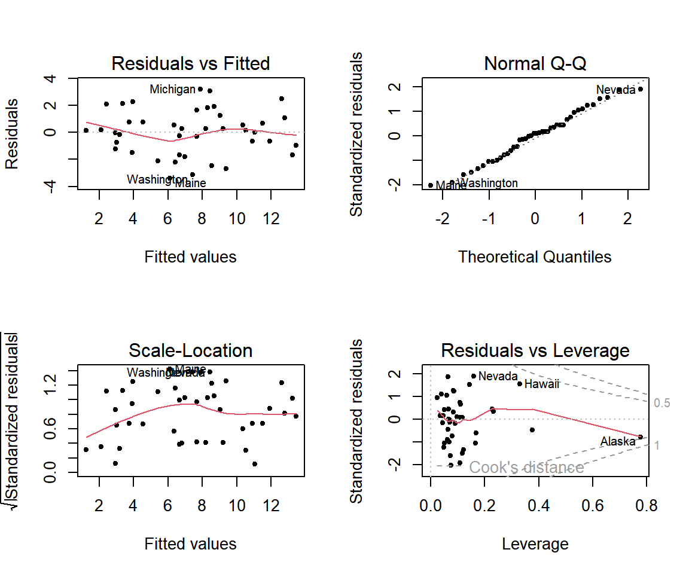
그림 1.19: 모형 fit_s의 모형진단 그래프
> car::vif(fit_s)
Population Life_Exp Frost Area
1.155550 1.051388 1.199224 1.029173 예측모형으로 사용하는 데 큰 문제는 없는 것으로 보인다. 이제 test data에 대한 예측을 실시해 보자.
> pred_s <- predict(fit_s, newdata = test_s)예측에 대한 평가는 패키지 caret의 함수 defaultSummary()로 할 수 있다.
이 함수에는 test data의 반응변수와 예측 결과를 각각 obs와 pred라는 이름의 열로 구성한 데이터 프레임을 만들어서 입력하면 된다.
> defaultSummary(data.frame(obs = test_s$Murder, pred = pred_s))
RMSE Rsquared MAE
1.7758976 0.7475613 1.4721779 예측오차를 \(e_{i}\) 라고 하면, RMSE는 \(\sqrt{mean\left( e_{i}^{2} \right)}\),
MAE는 \(mean(|e_{i}|)\), Rsquared는 반응변수와 예측 결과의 상관계수의 제곱으로 계산된다.
예측오차에 대한 요약통계량 값을 보면 전반적으로 무난한 예측이 이루어진 것으로 보인다.
또한 summary(fit_s)에서 확인할 수 있는 training data에 대한 RMSE와 Rsquared의 값과 비교해서도 크게 떨어지지 않는 것으로 보아 overfitting의 문제도 없는 것으로 보인다.
Test data의 반응변수와 모형 fit_s의 예측 결과를 산점도로 나타내어 보자.
> data.frame(obs = test_s$Murder, pred = pred_s) %>%
+ rownames_to_column(var = "state") %>%
+ ggplot(aes(x = obs, y = pred)) +
+ geom_point() +
+ geom_abline(intercept = 0, slope = 1) +
+ geom_text(aes(label = state),
+ nudge_x = 0.3, nudge_y = 0.2)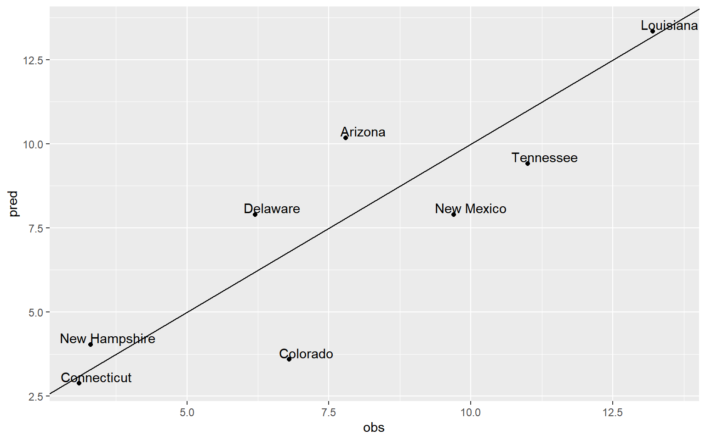
그림 1.20: state.x77 자료의 예측 결과 그래프